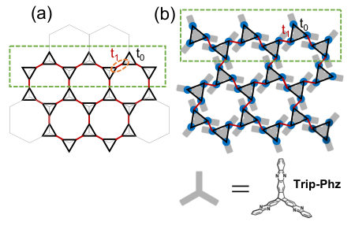
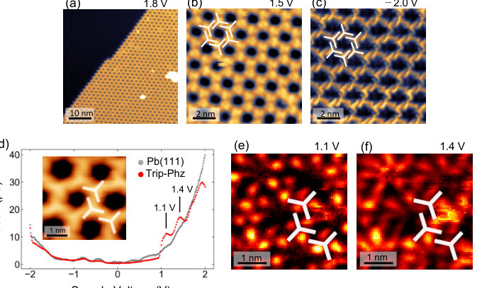

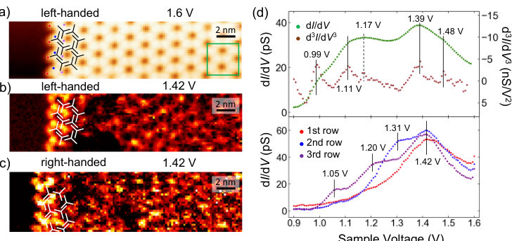
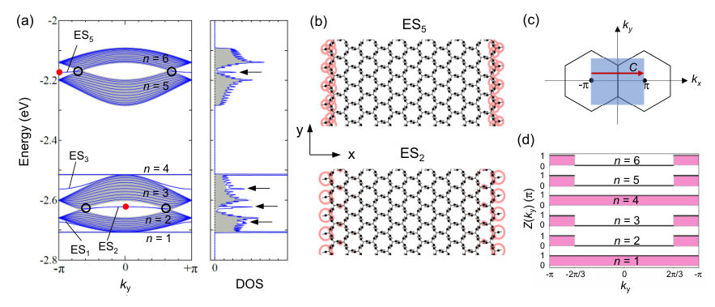
← Index · ← Previous · Next →
Authors: Can Yesilyurt
Type: both · Category: other · PDF: https://arxiv.org/pdf/2609.01755v1
Analysis basis: full PDF text, analyzed in chunks
Topic relevance: interference shaping light 3/5 · analog quantum simulation 1/5 · quantum optics experiment 1/5
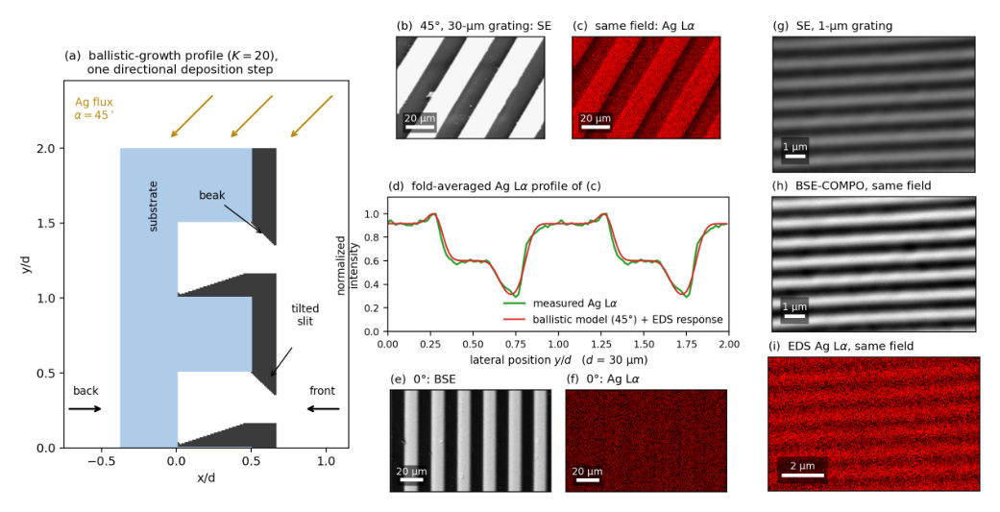
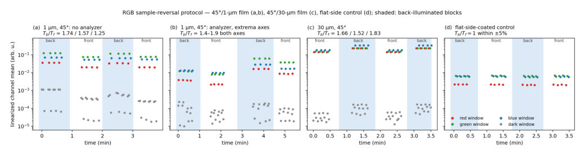
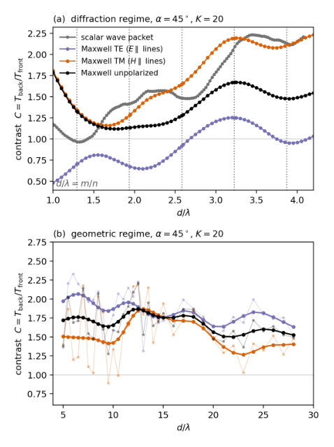
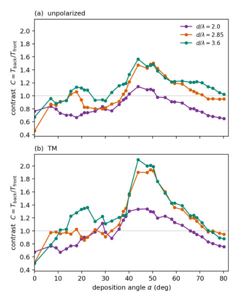
Summary. This work investigates how breaking the interface-orientation symmetry in a grating structure, achieved by oblique metal deposition, causes asymmetric optical transmission. By combining advanced full-wave simulations with sample-reversal measurements, the authors quantify a substrate-favored transmission contrast. This demonstrates a robust method for engineering directional optical responses in metamaterials.
Why it may be interesting. The study provides a concrete, experimentally verifiable platform for observing symmetry breaking in optical response, which has analogues in engineered quantum systems or anisotropic media.
Main problem. The paper demonstrates and quantifies asymmetric optical transmission arising from broken interface-orientation symmetry (IOS) in grating metallizations.
Main result. The oblique deposition of metal creates a one-sided, louver-like structure that leads to measurable, substrate-favored directional transmission ratios, which are successfully predicted by full-wave Maxwell calculations.
Method. The study combines experimental measurements using sample-reversal techniques with theoretical predictions derived from full-wave Maxwell simulations (FDTD).
Model / system. The physical system is a diffraction grating metallized with silver (Ag) via oblique-angle deposition, creating a self-shadowed, one-sided profile. The analysis uses principles of reciprocity and diffraction theory.
Key observables. Directional transmittance ratio ($T_{ ext{back}}/T_{ ext{front}}$), polarization-dependent contrast, and broadband substrate-favored transmission.
Important parameters / regimes. Deposition angle ($\alpha$), grating period ($d$), and wavelength ($\lambda$), with optimal asymmetry observed near $45^\circ$ deposition angle.
Assumptions / limitations. The model assumes ideal ballistic growth and that the observed asymmetry is entirely due to the broken IOS, while the zeroth-order specular reflection remains reciprocal.
Figures summary. Figures illustrate the one-sided Ag deposition profile, measured substrate-favored ratios for various periods, and comparisons between computed Maxwell results and scalar wave-packet models.
Paper structure. The paper establishes the theoretical basis using reciprocity, details the fabrication via oblique deposition, presents the full-wave simulation framework, and validates the predictions with quantitative sample-reversal measurements.
Reciprocal optical structures can transmit finite-angle illumination asymmetrically when the two illumination directions couple differently to the available diffraction channels. We realize this in a single overlay-free step: oblique metallization of a conventional diffraction grating, where ballistic self-shadowing grows a one-sided, louver-like silver profile. Electron microscopy and Ag mapping show the one-sided silver redistribution on oblique-coated films and its absence on a normal-incidence control. Full-wave Maxwell calculations on the ballistic-growth geometry predict broadband substrate-favored transmission, carried by the transverse-magnetic (TM) polarization in the diffraction regime (contrast up to 2.1) and polarization-independent and spectrally flat (1.5-1.9) deep in the geometric regime; the rejected power is redirected predominantly into specular reflection, and the deposition angle selects the magnitude and sign of the effect (optimum near $45^\circ$). Calibrated three-color sample-reversal measurements yield dark-corrected substrate-favored ratios that persist in both output-analyzer projections on a $45^\circ$-coated 1-$μ$m-period film (up to 1.8) and lie within the computed geometric-regime band on a 30-$μ$m-period film (1.5-1.8, with reference-normalized absolute transmittances).
Authors: Haoran Nie, Chaoran Jiang, Xiangying Shen, Lei Xu
Type: both · Category: other · PDF: https://arxiv.org/pdf/2609.02670v1
Analysis basis: full PDF text, analyzed in chunks
Topic relevance: analog quantum simulation 3/5 · driven-dissipative phase transition 1/5 · quantum measurements 1/5
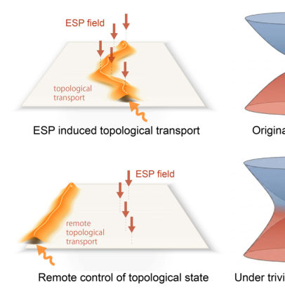
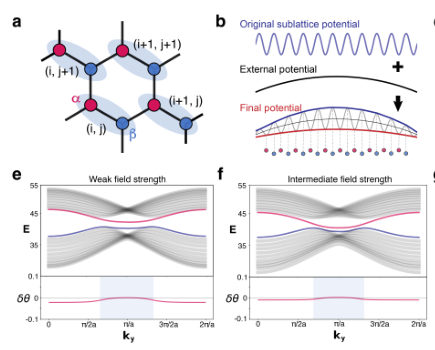
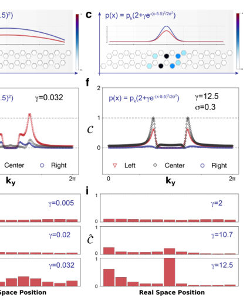
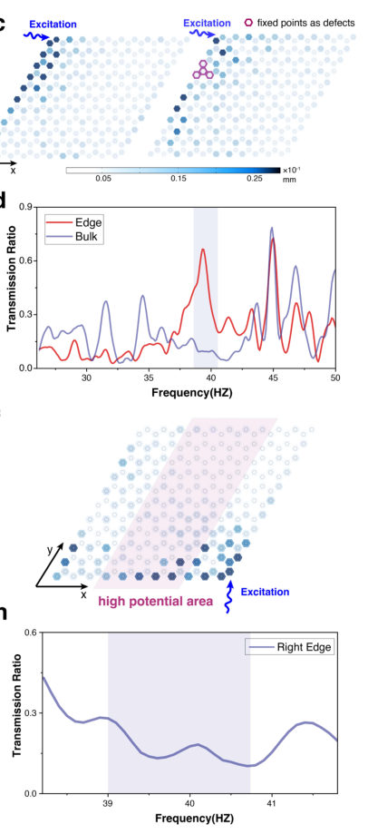
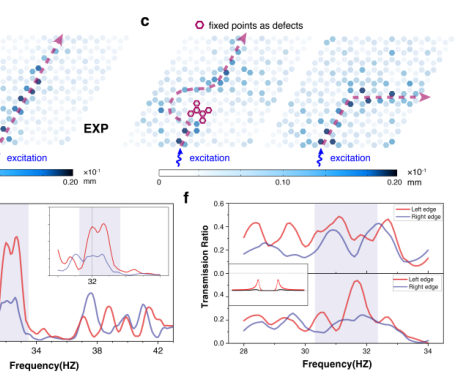
Summary. This work introduces 'topological lithography,' a method to create robust topological states by applying controllable external scalar potentials to existing systems. By modifying the effective mass term, the approach bypasses the need for complex material fabrication, allowing for programmable and reconfigurable topological patterns. This universality is demonstrated across mechanical, electronic, and circuit platforms.
Why it may be interesting. The concept of using external fields to engineer topological properties in real space, rather than relying on material composition or symmetry breaking, offers a highly tunable paradigm for designing quantum materials.
Main problem. Conventional topological insulators require distinct bulk symmetries, limiting flexibility; the goal is to induce tunable topological states anywhere (edge, bulk, remote) using only external fields.
Main result. An external scalar potential field can induce programmable topological states by modifying the Jackiw-Rebbi mechanism, enabling 'topological lithography' across mechanical, electronic, and acoustic platforms.
Method. The approach uses an External Scalar Potential (ESP) field to modify the effective mass term in the Hamiltonian, inducing a local topological marker (LTM) characterizing the transition.
Model / system. The system is modeled on a hexagonal lattice, analyzed via tight-binding Hamiltonians, and experimentally validated using mechanical vibrational systems and LC oscillatory circuits.
Key observables. Local Topological Marker (LTM), band structure evolution, and in-gap mode transmission ratios.
Important parameters / regimes. ESP strength ($\gamma$), potential shape (quadratic, Gaussian), and lattice geometry parameters.
Assumptions / limitations. The analysis assumes the ability to map the physics onto effective 1D chains or lattice models, and that the external field control is highly precise.
Figures summary. Figures illustrate the comparison between traditional and ESP-induced edge states, the evolution of band structures with ESP strength, and experimental setups showing LTM mapping and lithographic patterning.
Paper structure. The paper progresses from establishing the limitations of conventional TIs to introducing the ESP mechanism, detailing the theoretical framework (JR mechanism, LTM), validating it across multiple physical platforms (mechanical, electronic, LC circuits), and concluding with demonstrations of programmable topological lithography.
Topological insulators (TIs), recognized for their robust boundary states and unconventional phase transitions, have emerged as one of the most impactful discoveries in recent decades, attracting considerable interest across diverse fields. However, conventional TIs require topological contrasts between adjacent bulk regions, typically achieved by distinct symmetries, which limits their flexibility and broader applicability. In this work, we introduce a "lithography" approach to inducing topological states by applying external fields in time-reversal-symmetric systems. These states transcend the conventional bulk topology design paradigm and offer exceptional tunability: they can exist at geometric edges, within the bulk, or even be induced remotely. Because the external field is highly controllable, the induced states are programmable, reconfigurable, and can be easily tailored into desirable patterns. Theoretically, we demonstrate that the external field modifies the Jackiw-Rebbi mechanism, inducing a real-space topological transition characterized by a local topological marker (LTM). We further establish an extended valley bulk-edge correspondence, which explains both the conventional scenario and our findings. Our results, validated across mechanical, electronic, and acoustic platforms, highlight the broad applicability of this approach to various systems. This work not only advances the theory of topology but also enhances the diversity, tunability, and practical implementation of topological states and materials.
Authors: Meysam Bagheri Tagani, Carmine Autieri, Sahar Izadi Vishkayi
Type: theory · Category: other · PDF: https://arxiv.org/pdf/2609.02429v1
Analysis basis: full PDF text, analyzed in chunks
Topic relevance: interference shaping light 3/5 · quantum measurements 1/5
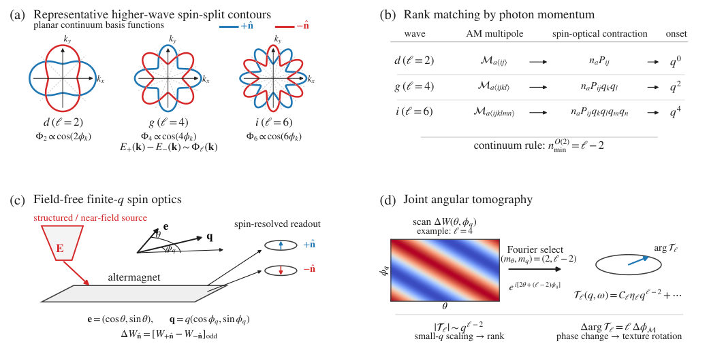
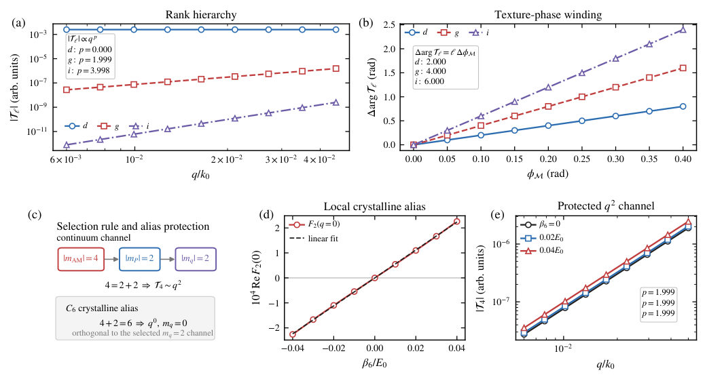
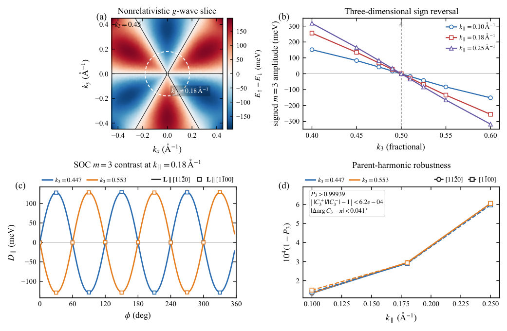
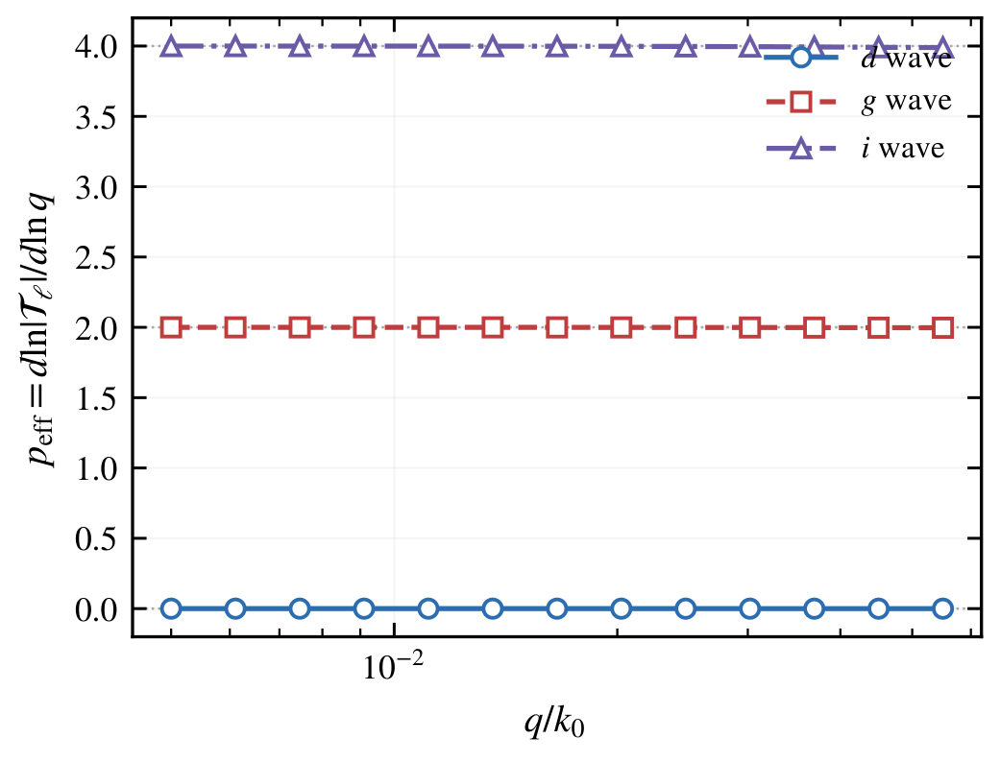
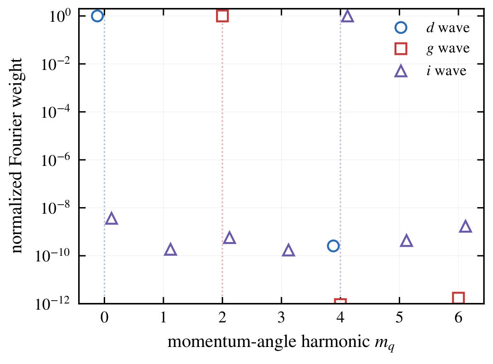
Summary. This work presents a novel optical technique to determine the spatial rank of higher-wave magnetic order in altermagnets. By measuring the absorption spectrum using finite photon momentum, the authors show that a joint Fourier projection isolates the magnetic harmonic's rank via a characteristic power-law dependence on momentum. This method provides a robust diagnostic tool for characterizing complex magnetic textures in materials like MnTe.
Why it may be interesting. The technique of using momentum-resolved spectroscopy to extract higher-order spatial harmonics is a powerful, non-linear optical diagnostic tool applicable to complex magnetic order parameters, bridging condensed matter theory with advanced quantum optics.
Main problem. The primary challenge is optically identifying the spatial rank of higher-wave altermagnetism because local electric-dipole response cannot uniquely resolve distinct continuum harmonics.
Main result. By utilizing finite photon momentum and a joint Fourier projection, the spatial rank ($\ell$) can be selectively isolated, yielding a power law scaling of $|T_\ell| \propto q^{\ell-2}$.
Method. The authors derive a rank-matching rule and employ a joint Fourier projection in polarization and momentum angle, which is verified by a Ward-consistent finite-q microscopic calculation.
Model / system. The study focuses on altermagnetic materials exhibiting higher-wave order (d-, g-, or i-wave), using MnTe as a testbed. The analysis involves calculating the joint Fourier projection of the spin-resolved absorption rate.
Key observables. The joint Fourier projection $T_\ell(q, \omega)$, which exhibits a power law scaling $|T_\ell| \propto q^{\ell-2}$ corresponding to the rank $\ell$.
Important parameters / regimes. The photon momentum $q$ is crucial for achieving rank selectivity; the scaling exponent is $\ell-2$.
Assumptions / limitations. The method assumes that the finite photon momentum supplies the necessary missing spatial rank information, and the joint projection successfully filters out lower-order crystalline aliases.
Figures summary. Figures illustrate the rank-matching principle via joint angular tomography ($d: q^0, g: q^2, i: q^4$) and show that the parent $g$-wave component remains strongly encoded in MnTe despite strong SOC effects.
Paper structure. The paper first establishes the theoretical necessity of finite photon momentum for rank-selective tomography, derives the projection formula, and then applies this method to first-principles calculations on MnTe to confirm the persistence of the higher-wave magnetic texture.
Identifying the spatial rank of higher-wave altermagnetic order optically is challenging because local electric-dipole response does not uniquely resolve distinct continuum harmonics. We show that finite photon momentum turns one-photon spin-resolved absorption into a rank-selective tomography. For the planar $|m|=\ell$ sector of an even-parity $\ell$-wave component, a joint Fourier projection in polarization and momentum angle isolates $\mathcal T_\ell\proptoη_\ell q^{\ell-2}$, yielding the hierarchy $d:q^0$, $g:q^2$, and $i:q^4$; phase changes track rotations of the selected magnetic harmonic. A Ward-consistent finite-$q$ microscopic calculation reproduces these powers without imposing them. Although discrete crystal symmetry can generate lower-order local aliases, they are orthogonal to the selected momentum harmonic and cannot contaminate it below $q^{\ell-2}$. In MnTe, whose nonrelativistic parent order is three-dimensional $g$ wave while spin--orbit coupling lowers the exact relativistic spin-momentum-locking symmetry, first-principles calculations show that more than $99.9\%$ of the Fourier power of the Néel-projected $A$-region spin-energy contrast remains in the parent $g$-wave-derived $m=3$ harmonic. Structured near fields place the required momentum window within experimental reach.
Authors: Christian Wiedemann, Danilo Nikolić, Matthias Eschrig, Wolfgang Belzig
Type: theory · Category: other · PDF: https://arxiv.org/pdf/2609.02263v1
Analysis basis: full PDF text, analyzed in chunks
Topic relevance: Keldysh / 2PI / non-Gaussian methods 3/5
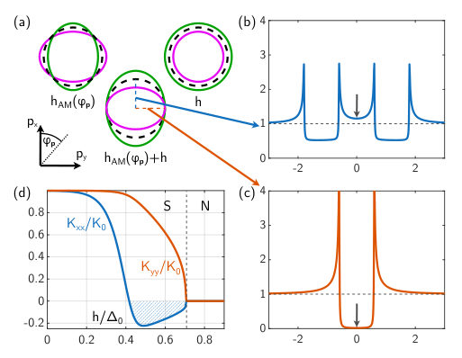
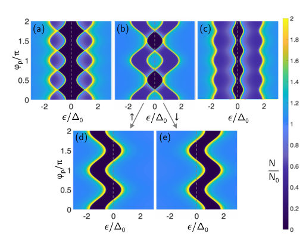
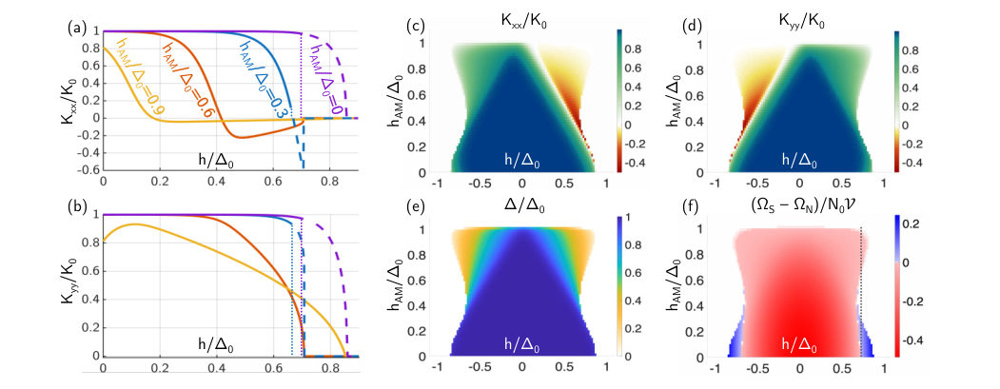
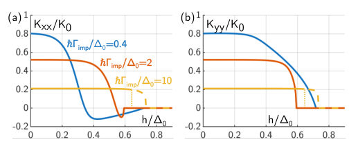
Summary. This theoretical work analyzes the anomalous paramagnetic superfluid response in altermagnetic superconductors. Using quasiclassical Green's functions, the authors show that the inherent anisotropy of the altermagnetic state causes a measurable paramagnetic Meissner effect. This effect is highly sensitive to external fields and impurity levels, providing a new diagnostic tool for gapless superconductivity.
Why it may be interesting. The study of unconventional superconducting responses, particularly those involving magnetic order (altermagnetism), provides rich theoretical ground for understanding how broken symmetries influence macroscopic quantum phenomena like the Meissner effect, which is relevant to advanced quantum materials.
Main problem. The paper investigates the emergence and characteristics of an anomalous (paramagnetic) superfluid response in superconducting materials that possess altermagnetic order.
Main result. The altermagnetic state leads to anisotropic gapless superconductivity, manifesting a paramagnetic Meissner effect strongest when the altermagnetic and Zeeman fields are parallel and in clean samples.
Method. The analysis employs quasiclassical theory using the Eilenberger equation framework to calculate the linear response current density via the Meißner kernel.
Model / system. The system is an altermagnetic superconductor subjected to an out-of-plane Zeeman field. The theoretical framework incorporates anisotropic exchange fields, Zeeman coupling, and impurity scattering into the Green's function formalism.
Key observables. Paramagnetic Meißner kernel components ($K_{ij}$), momentum-resolved Density of States (DOS), and the superconducting free energy ($\Delta\Omega$).
Important parameters / regimes. The relative strength of the altermagnetic field, the Zeeman field magnitude ($h$), and the impurity scattering rate ($\Gamma_{imp}$) relative to the superconducting gap ($\Delta_0$).
Assumptions / limitations. The analysis assumes weak altermagnetic exchange fields compared to the Fermi energy, allowing for a nearly spherical Fermi surface approximation.
Figures summary. Figures illustrate spin-split Fermi surfaces, momentum-resolved DOS showing gap closing, and the Meißner kernel components ($K_{xx}, K_{yy}$) as functions of applied fields and impurity concentrations.
Paper structure. The paper builds from establishing the theoretical framework (quasiclassical Green's functions) to calculating the superfluid response (Meißner kernel), deriving the key results regarding anisotropy and impurity effects, and concluding with the physical implications of the paramagnetic response.
We report on the emergence of the anomalous (paramagnetic) superfluid response in altermagnetic superconductors at arbitrary impurity concentrations. Due to anisotropic gapless superconductivity, altermagnetic superconductors with an out-of-plane Zeeman field display an anisotropic paramagnetic Meissner effect. The effect is strongest for parallel altermagnetic and Zeeman exchange field vectors and in the clean sample. The presence of nonmagnetic impurities leads to isotropisation and, consequently, weakens the effect; however, the paramagnetic response sustains intermediate amounts of impurities in the system. As demonstrated in recent experiments, microwave superfluid stiffness measurements can serve as a sensitive probe of gapless superconductivity.
Authors: Gianluigi Baiardi, Alex Boschi, Giulia Piccinini, Vaidotas Mišeikis, Lorenzo Cavicchi, Aaron Bostwick, Chris Jozwiak, Eli Rotenberg, Kenji Watanabe, Takashi Taniguchi, Marco Polini, Fabio Beltram, Antonio Rossi, Stiven Forti, Sergio Pezzini, Camilla Coletti
Type: experiment · Category: strongly correlated electrons · PDF: https://arxiv.org/pdf/2609.02403v1
Analysis basis: full PDF text, analyzed in chunks
Topic relevance: analog quantum simulation 3/5
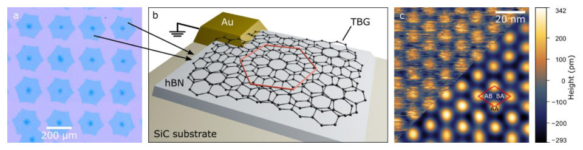
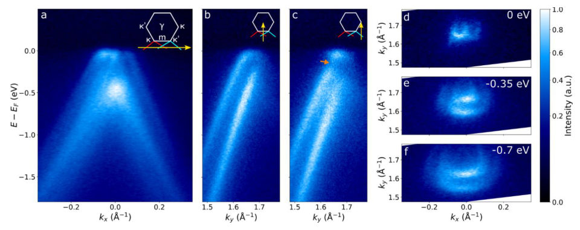
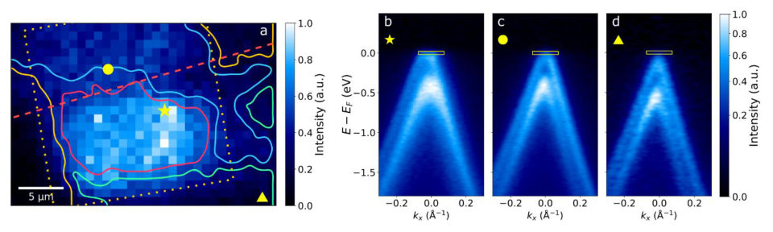
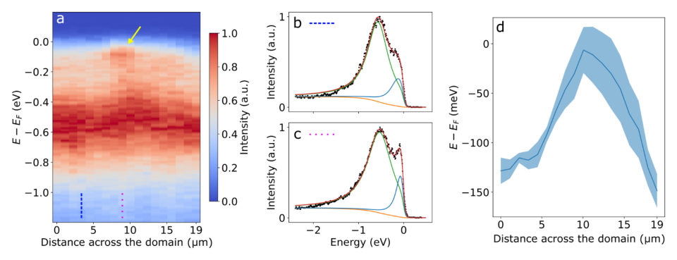
Summary. This work reports the direct experimental observation of flat electronic bands in twisted bilayer graphene grown via CVD, overcoming a major hurdle in scaling up MATBG research. By using nano-ARPES, the authors confirmed that CVD-grown samples exhibit electronic properties comparable to exfoliated samples. This validates CVD as a viable platform for studying strongly correlated physics in moiré materials.
Why it may be interesting. The realization of correlated electronic states in a scalable, solid-state platform like CVD graphene is crucial for studying strongly correlated electron physics outside of highly controlled, small-sample environments.
Main problem. The primary goal was to determine if the fragile flat-band and correlated electronic states characteristic of magic-angle twisted bilayer graphene (MATBG) could be realized using scalable, large-area growth methods like Chemical Vapor Deposition (CVD).
Main result. The study successfully observed electronic bands in CVD-grown TBG that are comparable to those measured in exfoliated samples, confirming the potential for scalable moiré materials hosting flat bands.
Method. The research employed room-temperature nano-Angle-Resolved Photoemission Spectroscopy (nano-ARPES) on CVD-assembled TBG domains, supplemented by STM and advanced data fitting techniques.
Model / system. The physical system is Twisted Bilayer Graphene (TBG) formed by stacking CVD-grown graphene layers near the magic angle. The electronic structure is analyzed using models derived from the moiré superlattice potential.
Key observables. Flat-band dispersion, gap opening near the Fermi level, Moiré lattice parameter (12.9 nm), and the relaxation length of the near-MA configuration.
Important parameters / regimes. Twist angle ($\sim 1.11^\circ$), doping shift ($> 100$ meV), and the domain size compatible with transport experiments.
Assumptions / limitations. The observed p-doping shift is attributed to synchrotron-radiation-induced photodoping, and the analysis relies on fitting EDCs with Lorentzian/Voigt lineshapes.
Figures summary. Figures show STM imaging of the moiré superlattice, ARPES-revealed electronic dispersion with flat bands, and position-resolved EDC fitting used to map the electronic configuration across the domain.
Paper structure. The paper progresses from establishing the experimental feasibility of CVD-grown MATBG, through quantitative ARPES measurements confirming flat bands, to detailed analysis mapping domain homogeneity and electronic structure.
Advances in chemical vapor deposition (CVD) growth have driven graphene crystal quality to unprecedented levels, yet it is still unknown whether this route can realize the fragile flat-band and correlated states of the magic-angle (MA) twisted bilayer graphene (TBG). Here, we report on the experimental observation by room-temperature nano-angle-resolved photoemission spectroscopy (nano-ARPES) of flat bands in a TBG sample close to the MA, assembled via a grow-and-stack protocol based on low-pressure CVD of graphene on copper. Our study indicates electronic bands fully comparable to those measured in exfoliation-based samples and determines the size of the largest near-MA domain to be compatible with electronic transport experiments, motivating further experiments on flat band physics in CVD-graphene.
Authors: Peiyao Liu, Yi Zhou
Type: theory · Category: other · PDF: https://arxiv.org/pdf/2609.02260v1
Analysis basis: full PDF text, analyzed in chunks
Topic relevance: analog quantum simulation 3/5
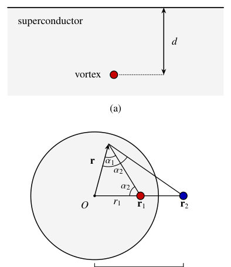
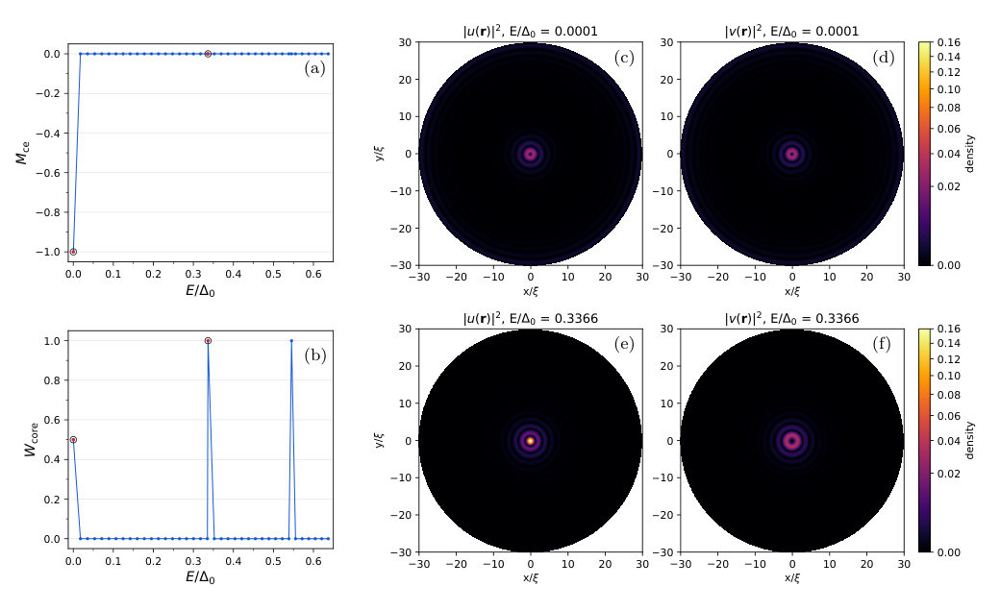
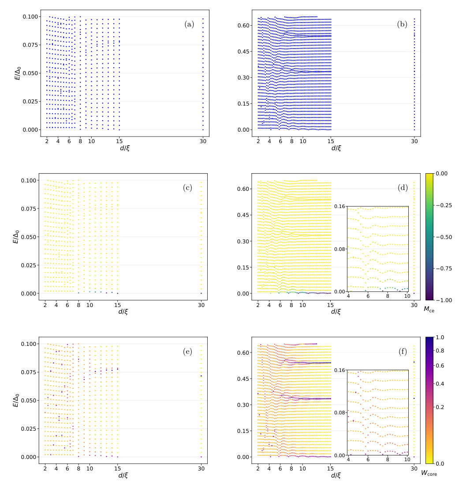
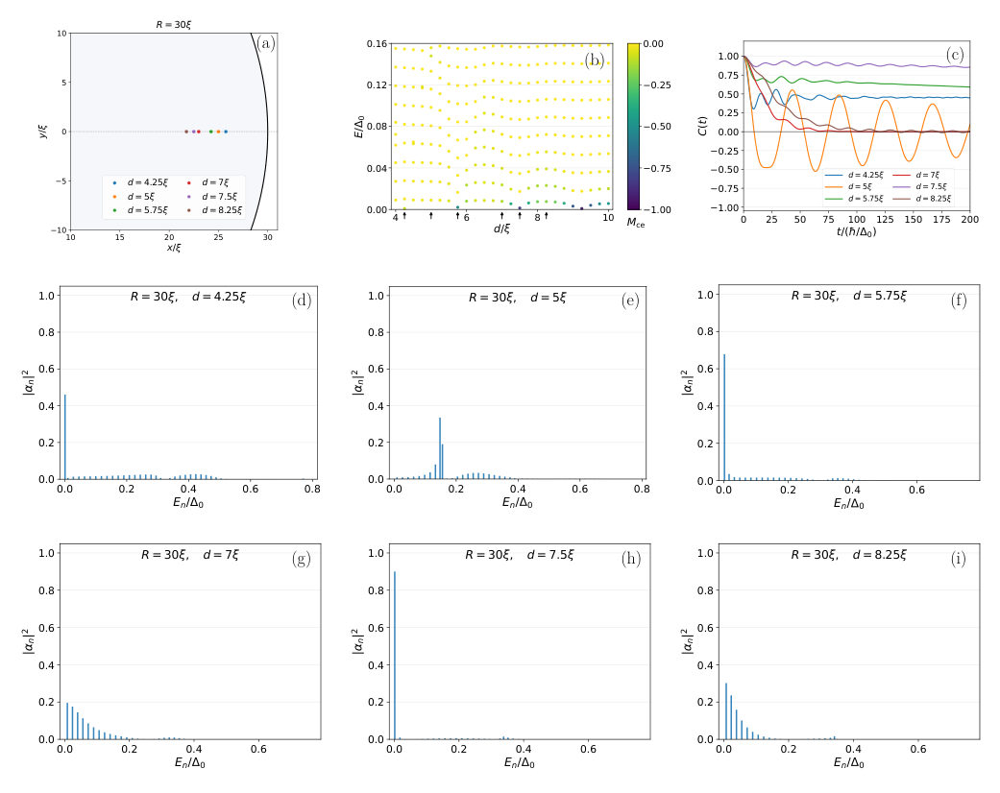
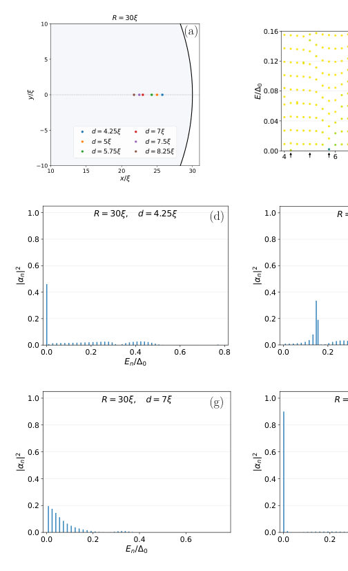
Summary. This work analyzes the spectral reorganization in a superconducting disk containing a vortex by studying the coupling between the vortex core and the boundary. Using BdG calculations, the authors show that while the localized wave packet retains high norm, the resulting spectral properties and parity memory are highly sensitive to the vortex-boundary separation. This highlights that simple measures of wave function overlap are insufficient predictors of topological memory.
Why it may be interesting. The study of topological superconductivity, Majorana fermions, and spectral dynamics in confined geometries is highly relevant to understanding topological quantum computation and superconducting quantum circuits.
Main problem. The study investigates how the coupling between a vortex core and the boundary reorganizes the low-energy electronic spectrum of a finite 2D p_x+ip_y superconductor, and what this implies for the coherence and memory of Majorana wave packets.
Main result. A large retained norm of the reference packet does not guarantee spectral concentration or persistent parity memory, as the spectral measure and parity dynamics vary significantly with the vortex-boundary separation.
Method. Bogoliubov-de Gennes (BdG) calculations are employed, supplemented by analyzing regional coherence measures and parity correlators.
Model / system. The system is a finite 2D p_x+ip_y superconducting disk containing a vortex, modeled using the grand-canonical mean-field Hamiltonian and solved via BdG equations.
Key observables. Nonmonotonic core-edge reorganization of eigenstates, retained norm of the reference packet, spectral measure (concentration/fragmentation), and signed parity correlator.
Important parameters / regimes. Vortex-boundary separation (d), superconducting gap ratio (Δ_0/E_F = 0.36), and disk radius (R=30ξ).
Assumptions / limitations. The analysis uses a finite-disk approximation and an idealized reference preparation method for the vortex core packet.
Figures summary. Figures illustrate vortex geometry and image construction; other figures show the spectral measure and parity correlator varying nonmonotonically with the vortex-boundary distance d.
Paper structure. The paper progresses from defining the physical system and Hamiltonian to calculating spectral reorganization via BdG, and finally analyzing the implications for parity memory using time-domain correlators.
We study how vortex--edge coupling reorganizes the low-energy sector of a finite two-dimensional \(p_x+ip_y\) superconducting disk as a function of the vortex--boundary separation \(d\) and examine what this reorganization implies for the parity memory associated with a prescribed vortex-core Majorana wave packet, a resource relevant to Majorana-based quantum operations. Bogoliubov--de Gennes calculations reveal nonmonotonic core--edge reorganization of the lowest positive-energy finite-disk eigenstate, with particularly rapid variation near \(d\simeq7ξ\), where \(ξ\) is the coherence length. To separate this eigenstate reorganization from the spectral representation of a prescribed state, we rigidly translate a centered-vortex core-reference packet to each fixed vortex position, restrict it to the target disk, and project it, without intermediate normalization, onto the particle-hole-complete low-energy subspace. For \(Δ_0/E_F=0.36\) and disk radius \(R=30ξ\), the resulting retained norm exceeds \(0.98\) at all six sampled separations, \(4.25\leq d/ξ\leq8.25\), while, depending on \(d\), the spectral measure is concentrated near zero energy, fragmented over several low-energy levels, or dominated by finite-energy weight. Correspondingly, the signed parity correlator displays slow temporal variation, rapid coherent dephasing, or sign-changing oscillations, with possible finite-size recurrences at later times. Thus a large retained norm does not by itself imply spectral concentration or persistent parity memory.
Authors: T. O. Oskolkova, Y. Koo, A. A. Shubnic, I. Yu. Chestnov, I. Choi, C. Cheng, D. Huang, T. Jiang, K. -D. Park, I. V. Iorsh, V. Kravtsov
Type: both · Category: other · PDF: https://arxiv.org/pdf/2609.02340v1
Analysis basis: full PDF text, analyzed in chunks
Topic relevance: analog quantum simulation 2/5 · driven-dissipative phase transition 1/5 · interference shaping light 1/5 · quantum measurements 1/5 · quantum optics experiment 1/5
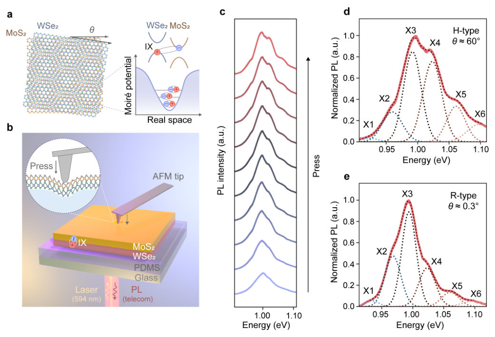
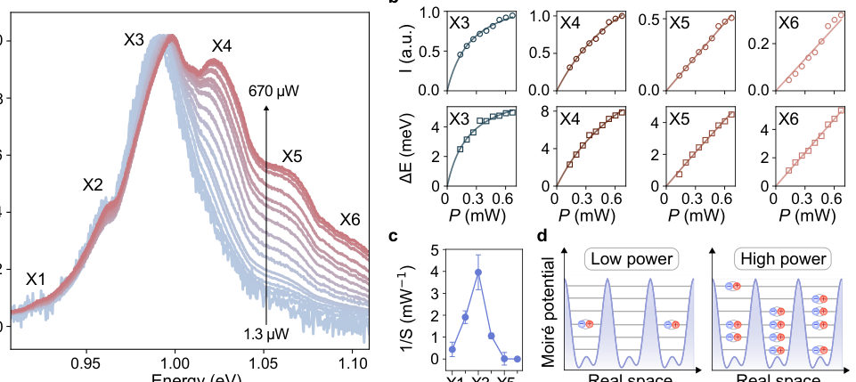
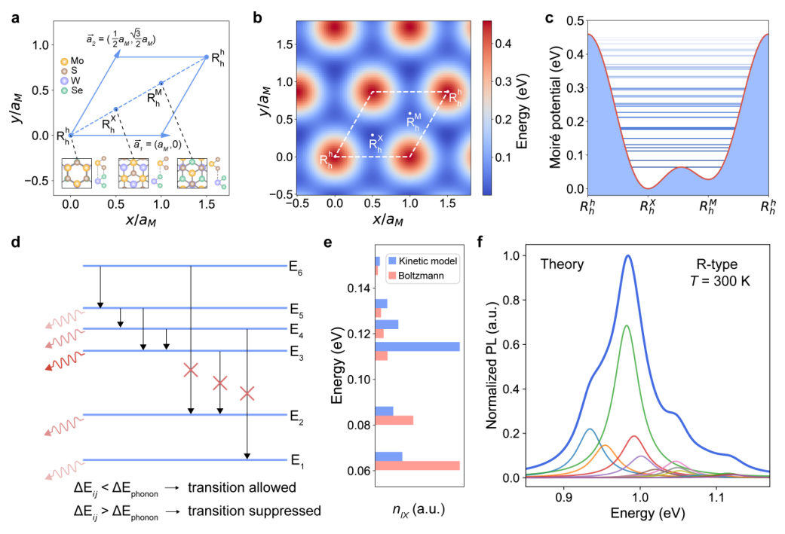
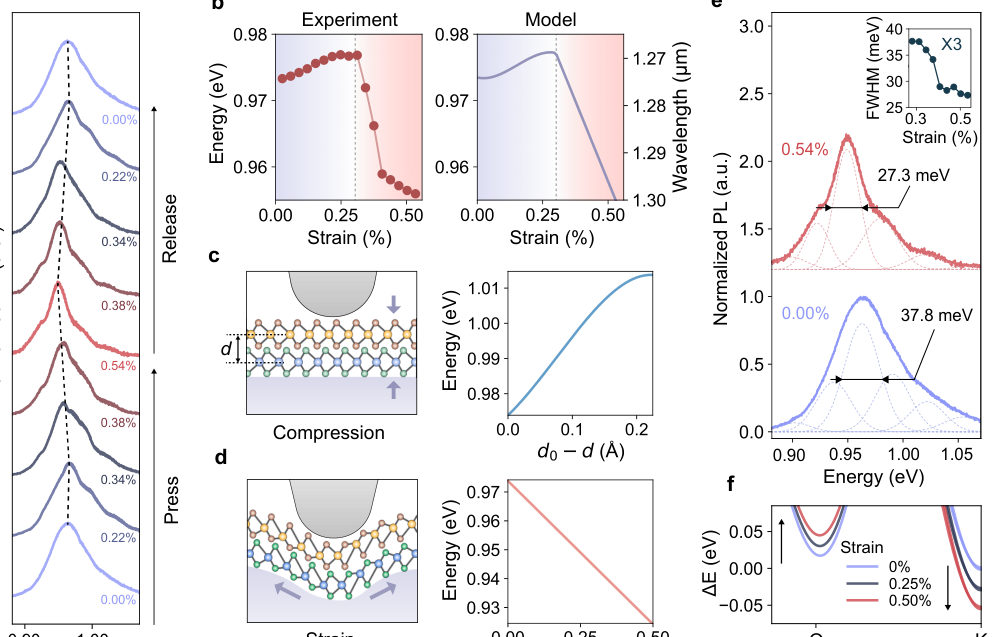
Summary. This work demonstrates room-temperature control over moiré excitons in $ ext{MoS}_2/ ext{WSe}_2$ heterobilayers by applying local mechanical strain via an AFM tip. By coupling strain engineering with PL spectroscopy and advanced theoretical modeling, the authors show they can not only activate these excitons at ambient temperatures but also tune their emission wavelength into the crucial second telecom window. This establishes local strain as a powerful tool for realizing practical quantum excitonic devices.
Why it may be interesting. The ability to use mechanical strain as a non-electrical, on-demand knob to tune quantum optical properties (like emission wavelength) at ambient conditions is highly relevant for developing practical quantum light sources and excitonic devices.
Main problem. The primary challenge addressed is overcoming the limitation of studying moiré excitons at cryogenic temperatures to enable practical, room-temperature quantum control.
Main result. The authors demonstrate that local strain engineering using an AFM tip can activate, control, and tune the emission wavelength of moiré excitons in $ ext{MoS}_2/ ext{WSe}_2$ heterobilayers to the second telecom window at room temperature.
Method. The study combines experimental measurements (PL spectroscopy under controlled local strain and power variation) with theoretical modeling (DFT and kinetic rate equations).
Model / system. The system is the moiré superlattice formed by stacking $ ext{MoS}_2/ ext{WSe}_2$ heterobilayers. The physics involves quantized moiré exciton states whose properties are tuned by external mechanical strain.
Key observables. Photoluminescence (PL) spectra, moiré exciton resonance energies ($ ext{X}1- ext{X}6$), spectral linewidth, and the effective emission energy as a function of applied strain.
Important parameters / regimes. Room temperature (300 K), local strain magnitude (tensile/compressive), excitation power ($P$), and the resulting shift towards the telecom window ($\sim 1.3 \mu ext{m}$).
Assumptions / limitations. The theoretical model assumes the blueshift is due to repulsive dipole–dipole interactions, and the kinetic model assumes excitation populates the highest energy level followed by non-radiative relaxation.
Figures summary. Figures show the PL spectrum evolving dramatically under increasing strain (multiple resonances emerging), the dependence of peak amplitudes on excitation power, and quantitative plots mapping the effective emission energy against applied strain (showing both initial blueshift and subsequent redshift).
Paper structure. The paper establishes the physical platform (moiré excitons), details the experimental control mechanism (local strain via AFM), analyzes the spectral signatures (power dependence and strain tuning), and supports these findings with a comprehensive theoretical model capturing the energy shifts and linewidth narrowing.
Moiré superlattices in heterobilayers of atomically thin transition metal dichalcogenides provide a versatile platform for exploring quantum many-body physics as they can trap excitons, leading to the formation of quantized moiré exciton states. However, such moiré excitons have been predominantly studied at cryogenic temperatures, which severely limits their practical applications. Here, we demonstrate room-temperature activation and control of moiré excitons in MoS$_2$/WSe$_2$ heterobilayers using local strain engineering. Applying mechanical strain with a modified atomic force microscopy tip, we observe a series of resonances attributed to interlayer exciton states confined in the moiré potential. Power-dependent photoluminescence measurements elucidate the population dynamics of the moiré exciton states, while controlled local strain enables continuous tuning of their emission wavelength to the center of the second telecom window. We provide a theoretical model that captures all experimentally observed features, including the unconventional spectral shape of the moiré exciton emission. Our findings establish local tip-induced strain as a powerful tool for the on-demand manipulation of moiré excitons, paving the way for room-temperature quantum excitonic devices.
Authors: Gautham Vijayan, Zhaoheng Zhang, Kenji Watanabe, Takashi Taniguchi, Michael Urbakh, Oded Hod, Xiang Gao, Elad Koren
Type: both · Category: other · PDF: https://arxiv.org/pdf/2609.02723v1
Analysis basis: full PDF text, analyzed in chunks
Topic relevance: analog quantum simulation 2/5 · Frenkel-Kontorova 1/5 · driven-dissipative phase transition 1/5 · non-equilibrium universality 1/5 · quantum measurements 1/5
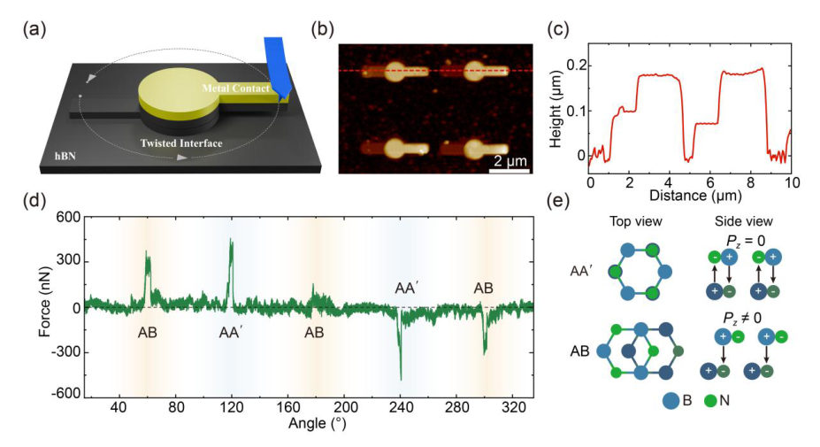
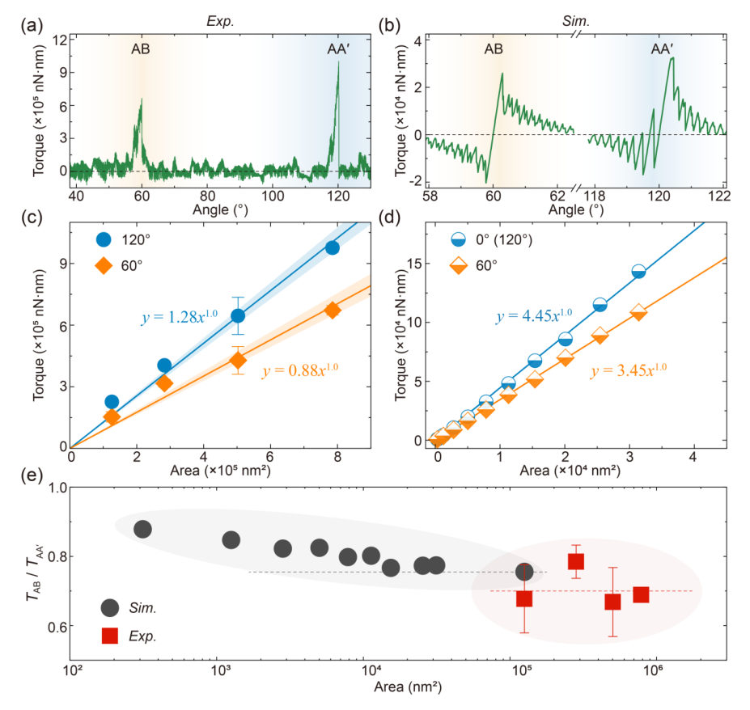
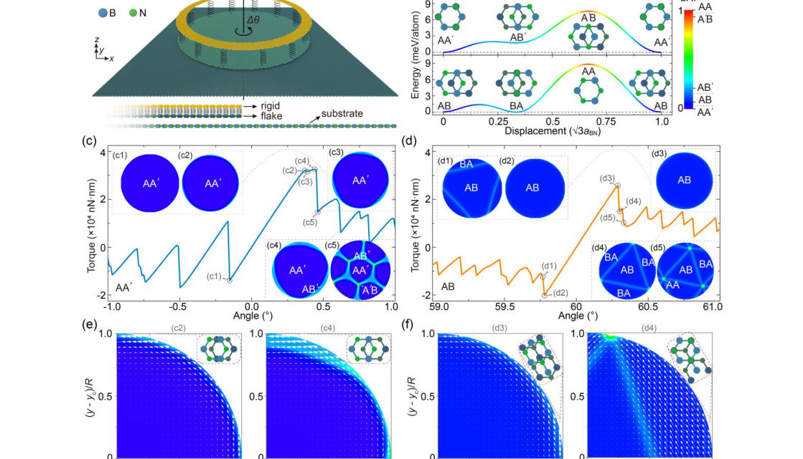
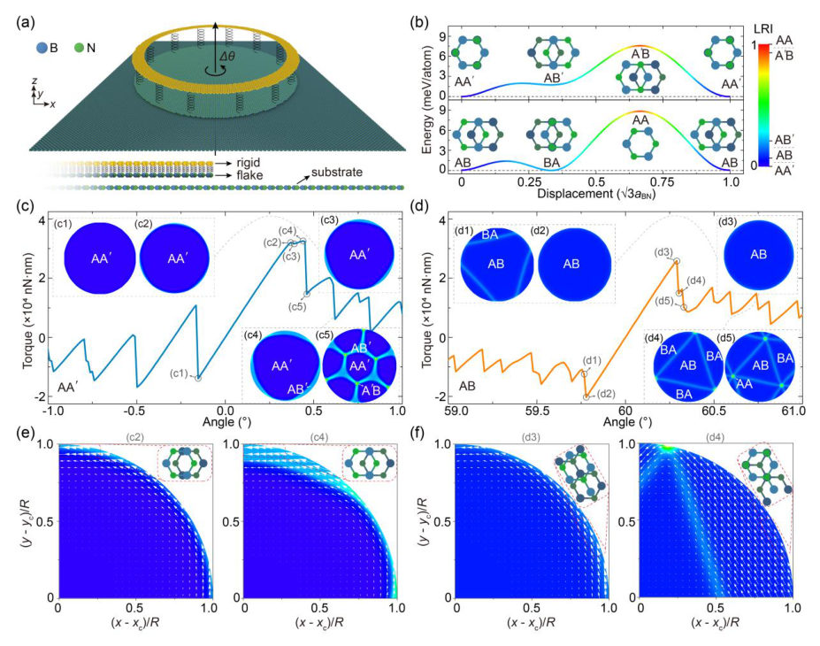
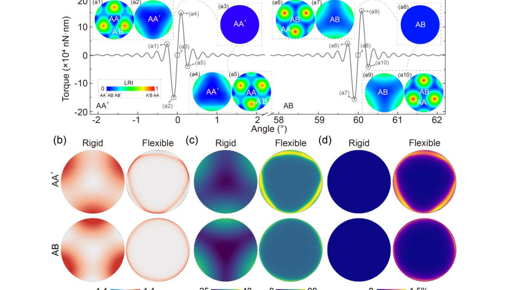
Summary. This work demonstrates that the stacking order of h-BN layers can be reversibly switched by applying external torque, a process termed 'twistronics.' By combining AFM experiments and atomistic simulations, the authors quantify the mechanical asymmetry between the stable AA and AB stacking states. This finding paves a pathway for designing reconfigurable nano-electromechanical devices based on controlled interlayer coupling.
Why it may be interesting. While focused on mechanics, the study of phase transitions (stacking changes) driven by external fields (torque) and the resulting polarization states offers analogies to controlling quantum states in engineered quantum materials.
Main problem. The paper addresses the challenge of controllably switching the interlayer stacking configuration in hexagonal boron nitride (h-BN) using external mechanical torque.
Main result. The stacking can be reproducibly switched between AA and AB modes, exhibiting a measurable asymmetry ratio (approx. 0.7) and showing that the peak torque scales linearly with contact area, indicating dominant edge elasticity.
Method. The study combines experimental measurements using an AFM setup to apply controlled torque with atomistic molecular dynamics (MD) simulations (LAMMPS) to model the atomic interactions.
Model / system. The physical system is the contact interface between h-BN layers. The modeling involves simulating the torsional loading on these homojunctions, comparing flexible atomic reconstructions against more rigid theoretical models.
Key observables. Rotational torque (T) vs. angle ($ heta$), peak torque values, asymmetry ratio ($ ext{T}{ ext{AB}} / ext{T}$).}'}$), and the scaling of torque with contact area ($ ext{T} \propto ext{A
Important parameters / regimes. The key parameters are the stacking configurations (AA, AB), the applied external torque, and the contact area (A).
Assumptions / limitations. The linear scaling of torque with area suggests that interfacial elasticity is the dominant mechanism governing the twisting process, overriding predictions from purely rigid models.
Figures summary. Figures illustrate the mechanical setup, force-angle profiles showing torque peaks at specific angles ($60^\circ, 120^\circ$), and comparisons between experimental torque-angle profiles and MD simulation results, particularly regarding area scaling and yielding mechanisms.
Paper structure. The paper progresses by first establishing the experimental measurement of torque switching in h-BN, then using atomistic simulations to reproduce and explain the observed asymmetry and the linear scaling of torque, contrasting ductile vs. brittle yielding mechanisms.
Twistronics of layered materials has emerged as a highly active field due to its profound implications for quantum electronics and materials engineering. However, the controllable manipulation of interlayer stacking remains a significant experimental challenge. Here, the homogeneous contact between hexagonal boron nitride layers is shown to be reproducibly switched between two distinct stable stacking configurations via an externally applied torque. Combining experiments and computational modelling, we identify the stacking order of these stable states as the commensurate AA and AB modes. These two states are associated with different rotational torque maxima, exhibiting an asymmetry ratio of 0.7, and distinct dynamics as a function of the twist angle. Moreover, the peak torque values scale linearly with contact area, highlighting the dominant role of edge elasticity in the twisting process. Given that the AA and AB stacking modes correspond to different out-of-plane electric polarization states, our findings offer a pathway for reconfigurable nano- and micro-electromechanical devices.
Authors: Xiaorui Dong, Mi Pang, Wenjie Ma, Yao Ma, Pugeng Hou
Type: theory · Category: other · PDF: https://arxiv.org/pdf/2609.02295v1
Analysis basis: full PDF text, analyzed in chunks
Topic relevance: Keldysh / 2PI / non-Gaussian methods 2/5 · methods for driven-dissipative 2/5 · analog quantum simulation 1/5
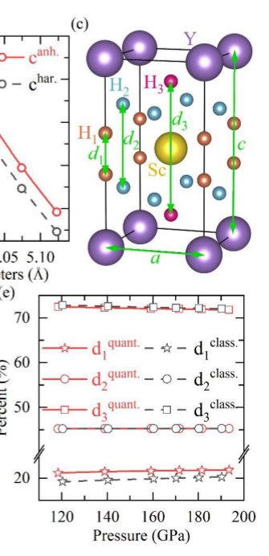
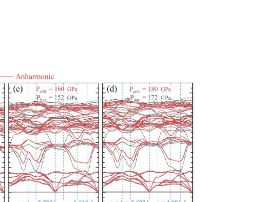
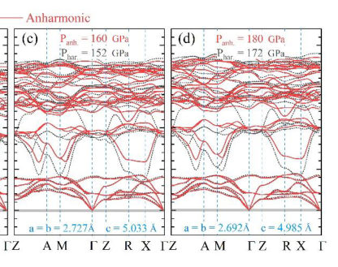
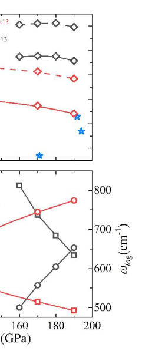
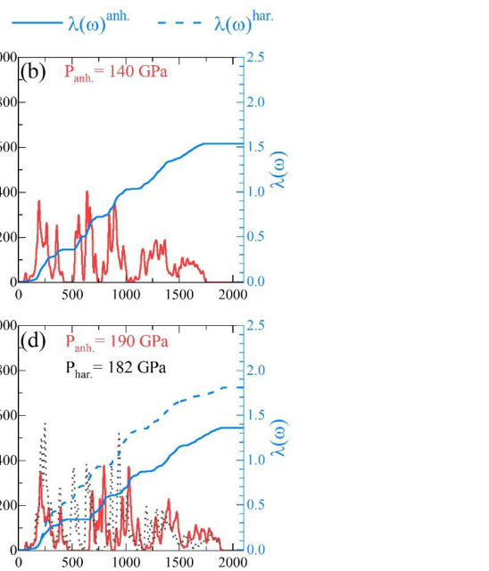
Summary. This theoretical study uses the Stochastic Self-Consistent Harmonic Approximation (SSCHA) to model the structural and electronic properties of the superhydride YScH8 under high pressure. The authors demonstrate that neglecting quantum and anharmonic lattice effects leads to significant overestimations of the superconducting critical temperature (Tc). A full treatment is necessary to accurately predict the material's behavior, matching theory to experiment.
Why it may be interesting. While focused on solid-state superconductivity, the rigorous application of free-energy minimization and quantum fluctuations (SSCHA) to determine equilibrium structure and vibrational properties shares methodological parallels with advanced quantum many-body treatments in AMO physics.
Main problem. The paper aims to accurately predict the superconducting critical temperature (Tc) in high-pressure ternary superhydrides by accounting for the effects of quantum and anharmonic ionic motion.
Main result. Incorporating quantum and anharmonic effects significantly renormalizes the crystal structure and lowers the dynamical stability threshold pressure, leading to a predicted Tc of 113 K at 190 GPa, which matches experimental observations.
Method. The Stochastic Self-Consistent Harmonic Approximation (SSCHA) is employed to minimize the free energy, providing a quantum-mechanically consistent treatment of lattice vibrations and structural relaxation.
Model / system. The study focuses on the P4/mmm-YScH8 superhydride under extreme high pressures. The methodology involves calculating the free energy and deriving phonon frequencies from the free-energy Hessian, contrasting this with classical harmonic approximations.
Key observables. Superconducting critical temperature (Tc), dynamical stability threshold pressure, phonon density of states, and Eliashberg spectral function.
Important parameters / regimes. Pressure (up to 190 GPa), electron-phonon coupling constant (lambda), and Coulomb pseudopotential (mu*).
Assumptions / limitations. The SSCHA method is used in its static limit, which is assumed to provide accurate phonon frequencies and EPC parameters for the system.
Figures summary. Figures compare harmonic vs. anharmonic pressures and structural parameters, and show the decomposition of the Eliashberg spectral function into contributions from different atomic sites (H1, H2, H3, Y, Sc).
Paper structure. The paper systematically compares results from classical harmonic approximations against those derived from the SSCHA formalism. It first establishes the structural renormalization and pressure shift, then uses the resulting quantum structure to calculate superconducting parameters, concluding that anharmonicity is essential for quantitative agreement with experiment.
The recent synthesis of P4/mmm-YScH$_{8}$ at 191.7 GPa with a superconducting critical temperature Tc of 113 K has attracted considerable interest in the study of ternary superhydrides. Here we systematically evaluate the effects of quantum and anharmonic motion of ions in P4/mmm-YScH$_{8}$ using the stochastic self-consistent harmonic approximation (SSCHA). We find that these effects renormalize the crystal structure and lower the dynamical stability threshold pressure from $\sim$140 GPa to $\sim$84 GPa, a reduction of about 40%. Furthermore, neglecting these effects causes a significant overestimation of the $T_{c}$, for instance by $\sim$20 K at 190 GPa. Our prediction of $T_{c}$ at 190 GPa is 113 K ($μ^{*}$= 0.13), close to the experimental observation. Analysis of the phonon density of states and Eliashberg spectral function further reveals site-dependent contributions to superconductivity. These results establish that a consistent treatment of nuclear quantum motion and anharmonicity is essential for accurately predicting superconductivity in compressed ternary hydrides.
Authors: Yun-Mei Li, Jiacheng Yao, Hua Wang, Kai Chang
Type: theory · Category: other · PDF: https://arxiv.org/pdf/2609.02008v1
Analysis basis: full PDF text, analyzed in chunks
Topic relevance: Keldysh / 2PI / non-Gaussian methods 2/5 · analog quantum simulation 1/5
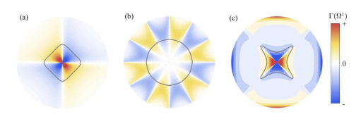
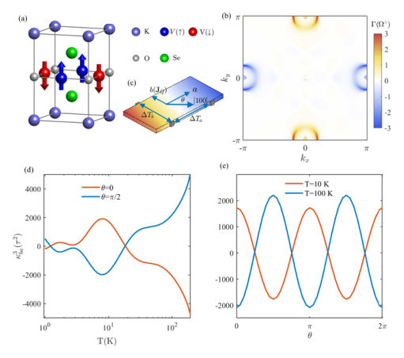
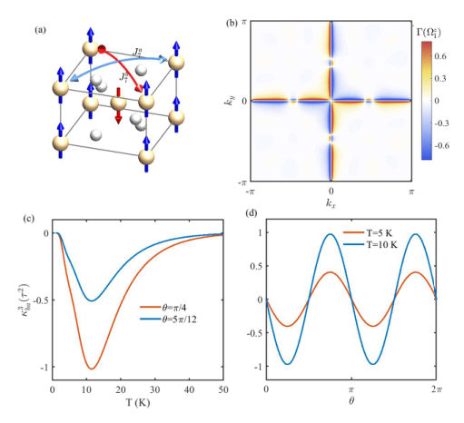
Summary. This work develops a theory to predict the third-order nonlinear thermal Hall effect in altermagnets. By analyzing symmetry constraints, the authors show that this nonlinear response is a unique signature of altermagnetism, depending critically on the orientation of the material's Néel vector. This provides a powerful, measurable diagnostic tool for identifying and characterizing these novel magnetic materials.
Why it may be interesting. While focused on condensed matter magnetism, the use of Berry curvature and nonlinear transport coefficients connects to advanced topics in topological materials and non-equilibrium quantum dynamics, which are relevant to AMO physics.
Main problem. The paper investigates the symmetry-enforced third-order nonlinear thermal Hall effect (THE) in altermagnets.
Main result. A dominant third-order nonlinear THE is predicted for altermagnets with out-of-plane Néel order, providing a unique diagnostic tool to confirm altermagnetism and determine the Néel vector orientation.
Method. The authors developed a theoretical framework using Boltzmann transport theory and semiclassical wavepacket theory to calculate the transverse energy current up to the third order in the temperature gradient.
Model / system. The study focuses on altermagnets, which are novel collinear antiferromagnets. Calculations are performed for both electronic contributions (using materials like KV2Se2O) and magnon contributions (using insulators like MnF2).
Key observables. The third-order nonlinear thermal Hall coefficient ($\kappa_{3ba}$), which exhibits a characteristic $\pi$-periodic dependence on the temperature gradient direction.
Important parameters / regimes. The Néel vector orientation (out-of-plane vs. in-plane) is critical, as it dictates whether the third-order or linear THE dominates.
Assumptions / limitations. The analysis relies on the Relaxation Time Approximation (RTA) for both electronic and magnon transport calculations.
Figures summary. Figures illustrate the Berry curvature patterns for different altermagnetic types and show the calculated dependence of the third-order thermal Hall conductivity on the temperature gradient angle $\theta$.
Paper structure. The paper first develops the general theoretical formalism for the nonlinear THE, then applies this theory to analyze specific symmetry conditions, and finally demonstrates the results using concrete examples from both metallic and insulating altermagnets.
Thermal Hall effect (THE) is a powerful probe of material properties, even in insulators. Here we investigate the thermal response of altermagnets by developing a theory on Berry curvature driven nonlinear THE from both electrons and magnons. We identify symmetry conditions under which the third-order THE dominates while linear and second-order contributions vanish. Notably, d-wave and i-wave altermagnets with out-of-plane Neel order satisfy these conditions, whereas in-plane order yields a dominant linear THE. Using KV2Se2O (a d-wave altermagnetic metal) and MnF2 (an altermagnetic insulator) as concrete examples, we show nonzero third-order nonlinear THE from electrons and magnons, respectively, both exhibiting a pi-periodic dependence on the direction of temperature gradient. These symmetry-guaranteed Berry curvature phenomena provide a diagnostic for altermagnetism in candidate materials and enable determination of the Neel vector orientation.
Authors: Ryohei Nemoto, Xiangzhi Meng, Behzad Mortezapour, Alexander Weismann, Saya Nakano, Masahisa Tsuchiizu, Ryuichi Arafune, Noriaki Takagi, Sho Nakamura, Katsunori Wakabayashi, Rie Suizu, Richard Berndt, Takashi Uchihashi, Kunio Awaga
Type: both · Category: other · PDF: https://arxiv.org/pdf/2609.02567v1
Analysis basis: full PDF text, analyzed in chunks
Topic relevance: analog quantum simulation 2/5




Summary. This research reports the successful fabrication and characterization of a diatomic Kagome lattice using self-assembled organic molecules on a metal surface. By combining STM measurements with topological tight-binding calculations, the authors provided direct evidence for the existence of topologically protected zigzag edge states, establishing a novel supramolecular platform for quantum material research.
Why it may be interesting. The work demonstrates how complex, synthetic supramolecular chemistry can be used to engineer and observe fundamental topological electronic states, providing a platform for studying quantum materials beyond traditional crystal growth methods.
Main problem. The primary goal was the direct observation and theoretical confirmation of zigzag edge states in a supramolecular diatomic Kagome lattice.
Main result. The authors provided direct evidence for these topological edge states using STM spectroscopy, confirming predictions from tight-binding calculations based on the lattice's topology.
Method. The study combines experimental characterization using Scanning Tunneling Microscopy (STM) with theoretical modeling via Tight-Binding (TB) calculations and topological analysis using the Zak phase.
Model / system. The system is a diatomic Kagome lattice formed by the self-assembly of a triptycene derivative with phenazine moieties (Trip-Phz) on a Pb(111) surface. This structure is an extension of the honeycomb and Kagome lattices.
Key observables. STM topography, dI/dV spectra (showing distinct peaks), and spatial mapping of electronic states localized at the zigzag edges.
Important parameters / regimes. Lattice parameter of $1.92 \pm 0.04$ nm; coupling constants $t_0 = -0.141$ eV and $t_1 = -0.096$ eV; topological invariant $ ext{Z}(k_y) = \pi \pmod{2\pi}$.
Assumptions / limitations. The edge state existence is confirmed by the bulk-edge correspondence linked to the quantization of the Zak phase, despite the lattice lacking chiral symmetry.
Figures summary. Figures show STM topographs of the lattice, dI/dV spectra confirming molecular bands and edge state signatures, and theoretical plots illustrating the Zak phase calculation confirming topological nontriviality.
Paper structure. The paper establishes the physical system (Trip-Phz on Pb(111)), presents STM observations confirming the lattice structure and edge termination, and then uses TB calculations and Zak phase analysis to provide the theoretical underpinning and direct evidence for the topological edge states.
Lattice geometry plays a fundamental role in the behavior of Bloch electrons in a crystal. The diatomic Kagome lattice, an extension of the honeycomb and Kagome lattices, is predicted to give rise to emergent and topological phenomena, but its experimental investigation has been limited thus far. Here, we fabricate a diatomic Kagome lattice through self-assembly of a triptycene derivative with phenazine moieties (Trip-Phz)---a $\mathrm{C_3}$-symmetric, non-planar $π$-conjugated molecule. Our scanning tunneling microscopy (STM) observations show that Trip-Phz forms a highly ordered diatomic Kagome lattice terminated by zigzag-type edges on the Pb(111) surface. Combined STM measurements and tight-binding calculations provide direct evidence for the existence of the edge states that correspond to those of graphene. These states are topological edge states dictated by the quantization of the Zak phase and the bulk-edge correspondence.This work reveals an ideal platform for exploring quantum materials with unique lattice geometries using supramolecular technology.
Authors: Janine Gückelhorn, Sebastián de-la-Peña, Monika Scheufele, Matthias Grammer, Matthias Opel, Stephan Geprägs, Juan Carlos Cuevas, Rudolf Gross, Hans Huebl, Akashdeep Kamra, Matthias Althammer
Type: experiment · Category: other · PDF: https://arxiv.org/pdf/2609.02631v1
Analysis basis: full PDF text, analyzed in chunks
Topic relevance: quantum measurements 2/5
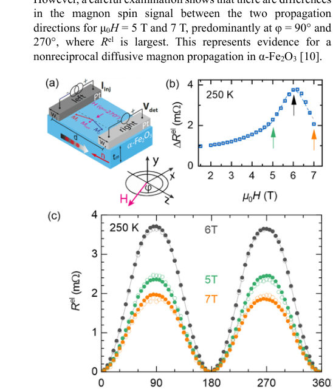
Summary. This experimental work investigates the magnon Hanle effect in antiferromagnetic alpha-Fe2O3 using electrical spin injection and detection. The key finding is the observation of a nonreciprocal magnon spin signal, which changes when the roles of the injector and detector are swapped. This demonstrates the potential of antiferromagnetic magnonics for advanced spintronic devices.
Why it may be interesting. The observation of nonreciprocity in magnonics, linked to an antisymmetric pseudofield, provides a platform for realizing electronics-inspired phenomena in magnetic materials, relevant for understanding spin-orbit coupling effects in quantum systems.
Main problem. The study aims to observe and characterize the nonreciprocal magnon Hanle effect in an antiferromagnetic insulator.
Main result. The researchers successfully demonstrated a nonreciprocal magnon spin signal in alpha-Fe2O3, where reversing the roles of the spin injector and detector alters the measured signal.
Method. The experiment utilizes a non-local, two-terminal geometry to measure magnon spin currents via electrical injection and detection using Pt electrodes.
Model / system. The physical system is alpha-Fe2O3 thin films coupled with Pt electrodes. The phenomenon studied is the magnon Hanle effect, which involves the precession of the magnon pseudospin.
Key observables. The magnon spin signal ($R_{ ext{magn}} = V_{ ext{det}}/I_{ ext{inj}}$), its dependence on the external magnetic field, and the difference in signal when the injector/detector roles are interchanged.
Important parameters / regimes. The external magnetic field ($\mathbf{H}$), particularly the compensation field (6 T) and the in-plane rotation angle ($\phi$).
Assumptions / limitations. The nonreciprocity is attributed to the presence of an antisymmetric magnonic pseudofield, which is a key theoretical deduction.
Figures summary. Figure 1(a) sketches the sample setup and angle dependence. Figure 1(b) shows the field dependence confirming the compensation field. Figure 1(c) compares forward and backward propagation signals, highlighting the nonreciprocity.
Paper structure. The paper details the experimental setup, measurements of the Hanle effect, and then focuses on demonstrating and analyzing the nonreciprocal nature of the signal as a function of magnetic field and angle.
The precession of the magnon pseudospin about the equilibrium pseudofield, the latter capturing the nature of magnonic eigenexcitations in an antiferromagnet, gives rise to the magnon Hanle effect. Its realization via electrically injected and detected spin transport in an antiferromagnetic insulator demonstrates its high potential for devices and as a convenient probe for magnon eigenmodes and the underlying spin interactions in the antiferromagnet. Here, we observe a non-reciprocity in the Hanle signal measured in alpha-Fe2O3 using two spatially separated Pt electrodes as spin injector and detector. Interchanging their roles alters the detected magnon spin signal. The recorded difference depends on the applied magnetic field and reverses sign when the signal passes its nominal maximum at the so-called compensation field. Our findings unlock the high potential of antiferromagnetic magnonics towards the realization of electronics-inspired phenomena.
Authors: Yashpal Singh, Juan E. Peralta, Koblar A. Jackson, Mark R. Pederson
Type: theory · Category: numerical methods · PDF: https://arxiv.org/pdf/2609.02524v1
Analysis basis: full PDF text, analyzed in chunks
Topic relevance: Frenkel-Kontorova 1/5 · analog quantum simulation 1/5 · methods for driven-dissipative 1/5
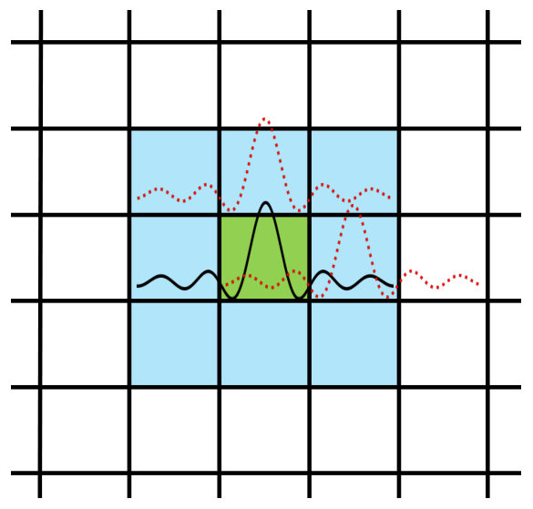
Summary. This paper introduces a 'Wannier-first' approach to DFT, enabling the simulation of extended chiral and helical materials by constructing localized Wannier-like functions directly in real space. This method efficiently handles complex symmetries, such as screw rotations, without the computational cost of large supercells. It provides a robust, practical framework for studying materials with nontrivial periodic symmetries.
Why it may be interesting. While focused on solid-state DFT, the core numerical technique—constructing localized basis sets and solving physics problems in a real-space, symmetry-adapted manner—is highly relevant for simulating open quantum systems or molecular dynamics where localized representations are preferred over Bloch wavefunctions.
Main problem. Developing an efficient electronic structure method for extended chiral systems that can accurately incorporate complex symmetries like screw rotations without resorting to prohibitively large supercells.
Main result. The Wannier-first approach successfully calculates total energies and band structures for various chiral and layered materials, showing excellent agreement with reference periodic calculations.
Method. It uses a real-space, Wannier-like function construction within a finite Wannier domain, avoiding the explicit calculation of Bloch states during the self-consistent field (SCF) cycle.
Model / system. The method is applied to extended periodic systems, including chiral chains ($ ext{-C}\equiv ext{C} ext{-}$, $ ext{-Li-F-}$), graphene, and layered graphite structures, allowing for the natural inclusion of combined translation-rotation (screw) symmetries.
Key observables. Total energies, band structures, band gaps ($E_g$), and energy differences ($\delta E$).
Important parameters / regimes. The size of the Wannier Domain (WD) and the convergence threshold ($\epsilon = 10^{-5}$ Hartree).
Assumptions / limitations. The contribution of Wannier-like functions outside the finite Wannier Domain is negligible for charge density calculation.
Figures summary. Figure 1 schematically illustrates the Wannier domain and localized functions; Figure 2 shows the iterative flowchart for SCF convergence; Table I compares calculated band gaps and energy differences across various systems and twist angles.
Paper structure. The paper details the formalism, building upon previous work, by defining the Wannier-like function optimization ($\hat{\Pi}$ operator), outlining the SCF procedure using the localized basis, and finally applying the method to benchmark systems to validate its capability with complex symmetries.
We present a real-space formulation of DFT for extended systems in which localized Wannier-like functions are constructed directly from localized Gaussian basis functions without explicitly computing canonical Bloch-like states during the self-consistent cycle. Building on the formalism of Pederson and Lin [Phys. Rev. B \textbf{35}, 2273 (1987)], a variational set of Wannier-like functions is generated self-consistently within a finite Wannier domain and used to construct the charge density, electrostatic potential, and per cell total energy of the extended system. The occupied space can be determined entirely from the Wannier-like functions. Electronic band structures can be recovered in a post-processing step by solving the full Hamiltonian in a Bloch-like basis constructed from Gaussian orbitals. A key feature of the method is that it can incorporate combined translation--rotation, or screw, symmetries, enabling efficient simulations of chiral and helical systems with finite twist angles at essentially the same computational cost as systems described by pure translational symmetry. The approach is validated through calculations on linear and twisted $\mathrm{{-}C{\equiv}C{-}}$ and $\mathrm{{-}Li{-}F{-}}$ chains, as well as graphene, where total energies and band structures show excellent agreement with reference periodic calculations. To illustrate the ability of the method to treat three-dimensional systems, it is further applied to AA graphite, in which carbon atoms in adjacent graphene layers are aligned directly above one another, as well as helically stacked AA graphite structures. The Wannier-first framework provides a practical route for treating extended systems with nontrivial translational, rotational, and screw symmetries, and provides a natural foundation for the implementation of orbital-dependent functionals such as the Perdew--Zunger self-interaction correction.
Authors: Alexander J Healey, Alan Salek, Christopher T-K Lew, Zsolt Benedek, Brett C Johnson, Josiah E Hsi, Islay O Robertson, Kaijian Xing, Hiroshi Abe, Takeshi Ohshima, Kenji Watanabe, Takashi Taniguchi, Mehran Kianinina, Viktor Ivady, Igor Aharonovich, Dougal McCulloch, Jean-Philippe Tetienne, David A Broadway
Type: experiment · Category: other · PDF: https://arxiv.org/pdf/2609.02100v1
Analysis basis: full PDF text, analyzed in chunks
Topic relevance: QC/QI experiment 1/5 · quantum measurements 1/5 · quantum optics experiment 1/5
Summary. This research demonstrates that spin-pair defects in hBN can function as highly robust quantum sensors, maintaining their spin resonance even when the host material undergoes a structural phase transition to wBN under extreme pressure. By combining optical and magnetic measurements in a DAC, the authors show that high pressure is a versatile tool for both sensing and engineering quantum emitters.
Why it may be interesting. This work provides a clear experimental demonstration of using extreme conditions (high pressure) not just as a challenge, but as a controllable knob to engineer and stabilize quantum emitters, which is highly relevant for solid-state quantum systems.
Main problem. The study investigates how quantum defects embedded in hexagonal boron nitride (hBN) behave and evolve when the material undergoes structural phase transitions induced by extreme high pressure.
Main result. Spin-pair defects maintain robust, pressure-independent spin resonance and optical emission up to 20 GPa, while the host material undergoes an irreversible structural change from hBN to wBN, demonstrating high pressure as a tool for defect engineering.
Method. Experiments were conducted in-situ using a diamond anvil cell (DAC), employing optical photoluminescence (PL) and optically detected magnetic resonance (ODMR) spectroscopy across varying pressures.
Model / system. The platform is optically active spin-pair defects (SPs) within hBN. The system is subjected to compression up to 22 GPa, causing a structural phase transition from hexagonal to wurtzite boron nitride (wBN).
Key observables. PL intensity, ODMR contrast, spin resonance frequency, and structural phase identification (via Raman/TEM).
Important parameters / regimes. Pressure (up to 22 GPa), temperature (implied ambient/cryogenic), and defect type (SP vs. V-B).
Assumptions / limitations. The spin-pair defect mechanism is assumed to be generic and robust, allowing the magnetic sensing function to be decoupled from the lattice structure changes.
Figures summary. Figures illustrate the loss of V-B PL and the persistence/enhancement of SP PL across the hBN-to-wBN phase transition, alongside ODMR measurements confirming SP robustness.
Paper structure. The paper systematically compares the pressure response of different defects (SP vs. V-B), demonstrates the structural phase transition using multiple techniques, and quantifies the robustness of the SP sensing mechanism across the entire pressure range.
Extreme pressures can transform materials and their properties, but probing these in-situ is made challenging by the small sample volumes and access requirements demanded by diamond anvil cells. Quantum defects offer a route to local measurements under such conditions, yet their sensing performance can be dictated by pressure-induced changes in their own host material. On the other hand, pressure may also be harnessed as a tool to engineer and stabilize new quantum defects with emergent functionalities. Here, we demonstrate both aspects within a unified platform based on optically active spin-pair defects in hexagonal boron nitride (hBN). As robust quantum sensors under pressure, these spin-1/2 systems retain pressure-independent spin resonances up to 20 GPa while maintaining or even enhancing their optical emission, in stark contrast to the spin-1 boron-vacancy centre in the same material. Simultaneously, we show that compression acts as a means of quantum defect engineering: the starting hBN undergoes an irreversible transformation into wurtzite boron nitride (wBN), during which the defect landscape is reconfigured. Spin-pair sensors are seen to persist across this structural transition, however, depending on the starting material we also observe new, highly fluorescent defects in the wBN phase. These results establish spin-pair defects in boron nitride as pressure-resilient quantum sensors while highlighting high pressure itself as a versatile pathway for creating and tuning quantum emitters.
Authors: Daniel Lourenço R. Santos, António T. Costa
Type: theory · Category: other · PDF: https://arxiv.org/pdf/2609.01853v1
Analysis basis: full PDF text, analyzed in chunks
Topic relevance: Keldysh / 2PI / non-Gaussian methods 1/5 · correlated / nonlocal dissipation 1/5
Summary. This theoretical study investigates magnon excitations in the altermagnetic metal $ ext{KV}_2 ext{Se}_2 ext{O}$ using RPA calculations on a derived tight-binding Hamiltonian. The authors demonstrate that altermagnetism dictates both the magnon dispersion and its anisotropic decay, while SOC opens a significant gap, making the material promising for spintronic applications.
Why it may be interesting. The detailed study of magnon damping due to coupling to the particle-hole continuum, combined with the prediction of directionally selective transport, provides a rich platform for understanding spin dynamics in correlated magnetic materials.
Main problem. The study investigates spin excitations (magnons) in the metallic altermagnetic compound $ ext{KV}_2 ext{Se}_2 ext{O}$, focusing on how altermagnetic symmetry and spin-orbit coupling control the magnon dispersion and decay.
Main result. The calculations reveal characteristic degeneracies and directional splittings in the magnon spectra, and the inclusion of SOC opens a sizable anisotropy gap ($\approx 6 ext{ meV}$) at the $\Gamma$-point, suggesting potential room-temperature magnetic stability.
Method. The research employs a fermionic Hamiltonian derived from ab initio calculations, computing transverse spin susceptibilities within the Random Phase Approximation (RPA) to determine the magnon dispersion and linewidths.
Model / system. The system is the metallic, quasi-two-dimensional altermagnetic vanadium oxyselenide, $ ext{KV}2 ext{Se}_2 ext{O}$. The model uses a multi-orbital tight-binding Hamiltonian incorporating both hopping terms and spin-orbit coupling ($H = H_0 + H$).}
Key observables. Magnon dispersion relation, magnon linewidths/lifetimes, angular dependence of magnon energies, and the $\Gamma$-point anisotropy gap ($\approx 6 ext{ meV}$).
Important parameters / regimes. SOC parameters ($\lambda_V = 22 ext{ meV}$, $\lambda_{ ext{Se}} = 206 ext{ meV}$), and the characteristic energy scales in the GHz-to-THz range.
Assumptions / limitations. The analysis assumes the C-type magnetic configuration and that the low-energy electronic states are well-described by the tight-binding model derived from DFT.
Figures summary. Figures illustrate spin-resolved electronic bands showing altermagnetic splitting, magnon dispersion along high-symmetry paths (M–$\Gamma$-X–Y–$\Gamma$), and spectral density maps highlighting anisotropic damping.
Paper structure. The paper progresses from establishing the electronic structure via DFT/PAW to constructing an effective tight-binding Hamiltonian. It then applies RPA to calculate the magnon spectrum, analyzing the effects of altermagnetism, SOC, and finite lifetime broadening.
We investigate the spin excitation in altermagnetic vanadium oxyselenides, focusing on the metallic quasi-two-dimensional compound $\text{KV}_2\text{Se}_2\text{O}$. Using a fermionic Hamiltonian derived from ab initio calculations, we compute the transverse spin susceptibilities within the random phase approximation and extract the magnon dispersion relation. We show that the altermagnetic symmetry leads to characteristic degeneracies and directional splittings in both the electronic bands and the magnon spectra along high-symmetry paths of the Brillouin zone. The metallic $\text{KV}_2\text{Se}_2\text{O}$ exhibits finite magnon linewidths arising from the coupling to the particle-hole continuum. Furthermore, by fixing the magnitude of the wave vector and varying its in-plane direction, we uncover a pronounced angular dependence of the magnon energies and lifetimes, with complementary damping behavior between the two magnon branches. Upon including spin-orbit coupling, the system exhibits an out-of-plane easy c-axis anisotropy, which opens a magnon gap of approximately 6 meV at the $Γ$-point, possibly rendering the magnetic order stable at room temperature. Our results demonstrate that altermagnetism controls not only the dispersion but also the anisotropic decay of spin excitations, highlighting altermagnetic metals as promising platforms for directionally selective magnon transport.
Authors: Stephan Geprägs, Matthias Opel, Johanna Fischer, Philipp Schwenke, Matthias Althammer, Hans Huebl, Rudolf Gross
Type: experiment · Category: other · PDF: https://arxiv.org/pdf/2609.02632v1
Analysis basis: full PDF text, analyzed in chunks
Topic relevance: analog quantum simulation 1/5 · quantum measurements 1/5
Summary. This work demonstrates that the Spin Hall Magnetoresistance (SMR) effect is a powerful, non-invasive tool for characterizing the spin structure of antiferromagnetic insulators. By measuring resistivity changes under rotating magnetic fields, the authors show that the SMR amplitude scales predictably with the sublattice magnetization, allowing for the study of AF spintronics in materials like $\alpha$-Fe$_2$O$_3$. This provides a robust method for reading out magnetic order in systems previously difficult to probe.
Why it may be interesting. While focused on condensed matter magnetism, the use of electrical transport to map out complex, non-collinear magnetic order parameters is relevant to understanding quantum states in engineered materials, bridging classical magnetism with transport physics.
Main problem. The primary goal is to develop a simple electrical transport method to probe the spin structure of antiferromagnetic (AF) materials, which lack a net macroscopic magnetization.
Main result. The Spin Hall Magnetoresistance (SMR) effect successfully reads out the spin configuration in AF insulators, showing that the SMR amplitude scales with the sum of absolute sublattice magnetizations.
Method. Angle-dependent magnetoresistance (ADMR) measurements are performed by measuring the longitudinal and transverse resistivities of a Pt top electrode as an external magnetic field is rotated in-plane.
Model / system. The study uses bilayer heterostructures combining easy-plane antiferromagnetic insulators (like $\alpha$-Fe$_2$O$_3$ and NiO) with a Pt heavy-metal electrode. The analysis is modeled using two magnetic sublattices ($M_A$ and $M_B$) and comparing results to known ferrimagnetic systems.
Key observables. Characteristic sinusoidal modulations in longitudinal and transverse resistivities ($\rho_{long}$ and $\rho_{trans}$), and the SMR amplitude.
Important parameters / regimes. The SMR amplitude scales with the product of the volume density ($n$) of magnetic ions and their spin state ($S$), i.e., $nS$.
Assumptions / limitations. The analysis assumes the SMR effect is sensitive to the spin configuration of all independent magnetic sublattices, not just the net magnetization.
Figures summary. Figure 1 shows in-plane ADMR for $\alpha$-Fe$_2$O$_3$/Pt, NiO/Pt, and Y$_3$Fe$_5$O$_{12}$/Pt bilayers. Figure 2 illustrates the scaling behavior of the maximum SMR.
Paper structure. The paper establishes the problem (probing AF spin structure) by introducing SMR as a tool. It details the measurements on various bilayers, develops a comprehensive model based on two sublattices, and presents results showing the universal scaling of the SMR amplitude with $nS$.
Antiferromagnetic materials promise improved performance for spintronic applications, as they are robust against external magnetic field perturbations and allow for faster magnetization dynamics compared to ferromagnets. The direct observation of the antiferromagnetic state, however, is challenging due to the absence of a macroscopic magnetization. We show that the spin Hall magnetoresistance (SMR) is a versatile tool to probe the antiferromagnetic spin structure via simple electrical transport experiments by investigating the easy-plane antiferromagnetic insulators alpha-Fe2O3 (hematite) and NiO in bilayer heterostructures with a Pt heavy-metal top electrode. While rotating an external magnetic field in three orthogonal planes, we record the longitudinal and the transverse resistivities of Pt and observe characteristic resistivity modulations consistent with the SMR effect. We analyze both their amplitude and phase and compare the data to the results from a prototypical collinear ferrimagnetic Y3Fe5O12/Pt bilayer. The observed magnetic field dependence is explained in a comprehensive model, based on two magnetic sublattices and taking into account magnetic field-induced modifications of the domain structure. Our results show that the SMR effect allows to readout the spin configuration and to investigate magnetoelastic effects in antiferromagnetic multi-domain materials. We demonstrate that the SMR amplitude scales with the sum of the absolute sublattice magnetizations in ferrimagnetic and antiferromagnetic materials. In alpha-Fe2O3/Pt bilayers, we find an unexpectedly large SMR amplitude of 2.5E-3, twice as high as for prototype Y3Fe5O12/Pt bilayers, making the system particularly interesting for room-temperature antiferromagnetic spintronic applications.
Authors: Hojun Lee, Seungyun Han
Type: theory · Category: other · PDF: https://arxiv.org/pdf/2609.02768v1
Analysis basis: full PDF text, analyzed in chunks
Topic relevance: Keldysh / 2PI / non-Gaussian methods 1/5
Summary. This work demonstrates that magnetic octupole (MO) degrees of freedom can emerge robustly in spin-orbit-entangled multiorbital systems. It establishes the MO Rashba-Edelstein effect, showing that an applied electric field can generate a non-equilibrium MO polarization. This MO response can be dominant and provides a novel, electrically controllable mechanism for manipulating magnetic order in antiferromagnets.
Why it may be interesting. The focus on multipolar responses (octupoles) and their electrical generation via the Edelstein effect is highly relevant to understanding emergent magnetic order and spin-orbit torque mechanisms in modern spintronics and topological materials.
Main problem. The paper investigates the emergence and electrical generation of magnetic octupole (MO) degrees of freedom in electronic systems, particularly in the context of Rashba-Edelstein effects.
Main result. Spin-orbit-entangled multiorbital states can host MO degrees of freedom, leading to an MO Rashba-Edelstein effect that can dominate over conventional spin responses, providing an interface-based route for generating non-equilibrium MO polarization.
Method. Theoretical analysis using minimal models for $p$-orbitals on a 2D lattice, calculating non-equilibrium polarization via linear response theory (e.g., $\delta\langle D_y angle = \chi_D E_x$).
Model / system. The study uses spin-orbit-entangled multiorbital states, modeled by $p_x, p_y, p_z$ orbitals on a 2D triangular or square lattice, incorporating SOC and interface-induced splitting.
Key observables. MO Rashba texture, MO Rashba-Edelstein polarization ($\delta\langle O_y angle$), Néel MO torque ($T_{MO}$), and sublattice-resolved susceptibilities ($\chi^D_{A,B}$).
Important parameters / regimes. Pure-MO limit, $d$-wave Antiferromagnet (AM) structure, and the relative strength of MO vs. spin responses.
Assumptions / limitations. The analysis often employs the constant-relaxation-time intraband approximation for non-equilibrium responses.
Figures summary. Figures illustrate the emergence of MO textures, the pure-MO limit, and the calculation of current-induced torques on the Néel vector, showing MO accumulation dominating spin accumulation in certain bands.
Paper structure. The paper develops from general concepts of magnetic multipoles in spin-orbit-entangled systems to specific models (triangular/square lattice) demonstrating the MO Rashba texture, and finally applying this to calculate a measurable torque in $d$-wave antiferromagnets.
Magnetic multipoles have attracted growing interest as order parameters and dynamical degrees of freedom in unconventional magnets, yet it remains unclear how broadly they can emerge as active electronic degrees of freedom. Here, we show that spin-orbit-entangled multiorbital states can host magnetic octupole (MO) degrees of freedom. In Rashba systems, this gives rise to an MO Rashba texture accompanying the J-Rashba texture. Remarkably, spin-orbital entanglement can realize a pure-MO limit in which the spin and orbital-angular-momentum textures vanish while the MO texture remains finite. An applied electric field converts this texture into a nonequilibrium MO polarization through an MO Rashba-Edelstein effect. Around the pure-MO regime, the MO Edelstein response dominates over the conventional spin response, showing that multipolar responses need not be small corrections to dipolar spin physics. Our results establish an interface-based route for electrically generating nonequilibrium multipolar magnetic polarization in spin-orbit-coupled systems.
Authors: Shigeru Takata, Soma Sakata, Masanari Hattori
Type: theory · Category: statistical mechanics · PDF: https://arxiv.org/pdf/2609.02276v1
Analysis basis: full PDF text, analyzed in chunks
Topic relevance: Keldysh / 2PI / non-Gaussian methods 1/5
Summary. This paper investigates heat transfer in a dense gas by comparing the standard Enskog equation with a modified version that includes a new factor. Numerical simulations show that while the modification has little effect on bulk properties like temperature, it causes a measurable difference in the stress tensor, especially under high confinement. This highlights the importance of subtle theoretical modifications in accurately modeling non-equilibrium transport phenomena.
Why it may be interesting. While focused on classical gas dynamics, the rigorous comparison of kinetic equations and the establishment of theorems (like H theorem) are fundamental techniques applicable to non-equilibrium statistical mechanics problems in quantum systems.
Main problem. The study compares the heat transfer in a dense gas using two variants of the Enskog equation: the original and a modified version incorporating a new factor.
Main result. The modification has a limited influence on temperature, density, and heat flow, but a visible difference appears in the stress tensor, particularly in highly confined gas regimes.
Method. The authors performed a numerical study of the time-dependent heat transfer problem by solving the kinetic equation using finite-difference and spectral methods.
Model / system. The system is a dense gas confined between two parallel plates, modeled using the Enskog equation framework for hard spheres.
Key observables. Temperature (T), density (rho), heat flow vector (q_1), and the stress tensor (p_ij).
Important parameters / regimes. Confinement ratio (sigma/L), Knudsen number (Kn), and the ratio of boundary temperatures (T_+/T_-).
Assumptions / limitations. The analysis assumes hard spheres, uses the Carnahan–Starling EoS, and considers one-dimensional behavior in the transverse directions.
Figures summary. Figures show the time evolution of T and q_1 agreeing between models, while p_11 shows divergence, especially in confined cases. Other figures quantify this difference's dependence on Kn and confinement.
Paper structure. The paper sets up the heat transfer problem, compares the OEE and EESM formulations, numerically solves the resulting kinetic equations, and analyzes the resulting macroscopic quantities, focusing on the differences in the stress tensor.
Heat transfer in a dense gas between two parallel plates is studied for assessing the quantitative difference of two variants of the Enskog equation, i.e., the original Enskog equation and the Enskog equation with a modified Enskog factor recently proposed in Phys. Rev. E \textbf{111}, 065108 (2025). The main advantage of the latter is that the H theorem, which is lacking in the former, has been established. The influence of the modification is assessed by comparing the macroscopic quantities in details. It is found that the influence of this modification is quite limited in the density, temperature, and heat flow vector. However, the influence on the stress tensor is visible in some severe setting of parameters.
Authors: Sofia Zinzani, Gilberto Nardi, Giacomo Becatti, Davide Alimonti, Letícia F. Basso, Kevin Rossi, Francesca Baletto
Type: theory · Category: numerical methods · PDF: https://arxiv.org/pdf/2609.02492v1
Analysis basis: full PDF text, analyzed in chunks
Summary. This paper introduces 'pySNOW', a comprehensive Python software suite for computational materials science, specifically targeting the analysis of nanoparticles and nanoalloys. It allows researchers to extract detailed structural, chemical, and catalytic information from atomistic simulation trajectories. This tool aims to streamline the process of understanding and rationally designing novel nanomaterials in silico.
Why it may be interesting. While focused on condensed matter structure, the development of a highly integrated, general-purpose simulation analysis toolkit like pySNOW is valuable for any field requiring complex data processing from atomistic simulations, including those in quantum many-body physics.
Main problem. The core problem is developing robust computational tools to characterize the complex structure-property relationships in nanoworld materials like nanoparticles and nanoalloys.
Main result. The authors introduce 'pySNOW', a comprehensive, modular Python suite designed to perform detailed morphological, chemical, and catalytic analysis on atomistic simulation data.
Method. The suite processes standard XYZ format input files to calculate numerous structural descriptors, connect to various simulation engines (MD, MC), and model catalytic processes like the Oxygen Reduction Reaction (ORR).
Model / system. The focus is on metallic nanoparticles and nanoalloys, analyzed using atomistic simulations. The tool supports analyzing structures derived from classical or ab initio molecular dynamics simulations.
Key observables. Coordination numbers (CNs), CNA patterns, PDDF, RDF, layer-by-layer density, shape descriptors (inertia/gyration tensors), Steinhardt parameters, SAXS spectra, and electrochemical activities (current/mass).
Important parameters / regimes. The analysis is applicable across various conditions, including those relevant to nanoparticle coalescence and catalytic reactions.
Assumptions / limitations. The primary requirement is the availability of simple, human-readable XYZ coordinate or trajectory input files.
Figures summary. Figure 1 illustrates the complete pySNOW workflow, showing the pipeline from reading input data to performing various analyses and modifications.
Paper structure. The paper details the modular architecture of pySNOW, covering input/output handling, structural descriptor calculation, advanced analysis modules for catalysis, and utility functions, while comparing its scope against existing tools like MDTraj and pySCAL.
In computational materials science, numerical simulations are indispensable tools for revealing atomic-scale processes. For building blocks of the nanoworld, such as nanoparticles and nanoalloys, atomistic simulations provide detailed insight into their behaviour under diverse conditions. These simulations enable the study of formation and growth mechanisms, transport phenomena, chemophysical stability, and chemical reactions, including catalytic processes. To unravel the complex structure--property relationships that characterise nanoobjects, it is crucial to develop robust and insightful representations of their atomistic structure at global and local scales. Such descriptions enhance our understanding of nanoparticle behaviour and play a key role in guiding their rational design in silico for targeted applications.
Authors: Chen Zhang, Y. X. Zhao
Type: theory · Category: other · PDF: https://arxiv.org/pdf/2609.02025v1
Analysis basis: full PDF text, analyzed in chunks
Summary. This paper demonstrates that the K-theoretic classification of topological phases is insufficient for systems with P and T symmetries. The authors introduce a new topological invariant, $\eta$, derived from analyzing the symmetry-constrained path space. This invariant reveals distinct topological phases that are invisible to standard K-theory diagnostics.
Why it may be interesting. This work provides a rigorous mathematical extension to topological classification beyond standard K-theory, which is crucial for understanding novel topological phases in condensed matter systems.
Main problem. The standard K-theoretic framework for classifying topological phases is shown to be incomplete, even for simple spinless systems possessing both P (inversion) and T (time-reversal) symmetries.
Main result. The authors identify a new topological invariant ($\eta$) that cannot be determined from the parity spectra at inversion-invariant momenta, revealing crystalline topological phases absent from K-theory.
Method. The classification is achieved via a first-principles analysis of the topological classes by analyzing the 'symmetric clutching data' and utilizing Wilson-loop spectral flow methods.
Model / system. The analysis focuses on spinless systems with P and T symmetries, using the Bloch Hamiltonian $H(\mathbf{k})$ and examining its behavior at inversion-invariant momenta ($\Lambda_i$).
Key observables. The new $\mathbb{Z}_2$ invariant ($\eta$), the Stiefel–Whitney classes, and the path-connected components $\pi_0(C_n)$ of the path space.
Important parameters / regimes. The parity spectrum of occupied states at inversion-invariant momenta, and the structure of the fundamental group $\pi_1(O(N))$.
Assumptions / limitations. The analysis assumes the existence of a continuous orthonormal basis of occupied states on the fundamental domain $ au$.
Figures summary. Figures illustrate the division of the Brillouin torus into an inversion fundamental domain ($ au$) and show schematic Wilson-loop spectral flows for the $\eta$ invariant.
Paper structure. The paper develops the mathematical framework by analyzing path spaces $C_{S_n\Gamma, F}$ to determine the fundamental group $\pi_0(C_n)$, and then applies this to physical systems to derive the new invariant $\eta$ that supplements the K-theoretic classification.
The K-theoretic framework provides a complete topological classification of the tenfold symmetry classes and has been generalized to incorporate crystalline symmetries. Here, we show that this classification is incomplete even in the elementary case of spinless systems possessing both P and T symmetries. We obtain the complete classification through a first-principles analysis of the topological classes of P- and T-symmetric bands, namely, by classifying the corresponding symmetric clutching data. We identify a topological invariant that is invisible from the K-theoretic perspective when the occupied states at each inversion-invariant momentum have uniformly positive or uniformly negative parity. In special cases, such as when all inversion-invariant momenta have uniformly positive parity, this invariant can be interpreted as the second Stiefel--Whitney class or the Euler number defined over an inversion fundamental domain, namely, half of the Brillouin zone. Our work not only reveals a new topological invariant that cannot be determined from the parity spectra at inversion-invariant momenta under P and T symmetries, but also demonstrates the existence of crystalline topological phases that are absent from the K-theoretic classification.
← Index · ← Previous · Next →